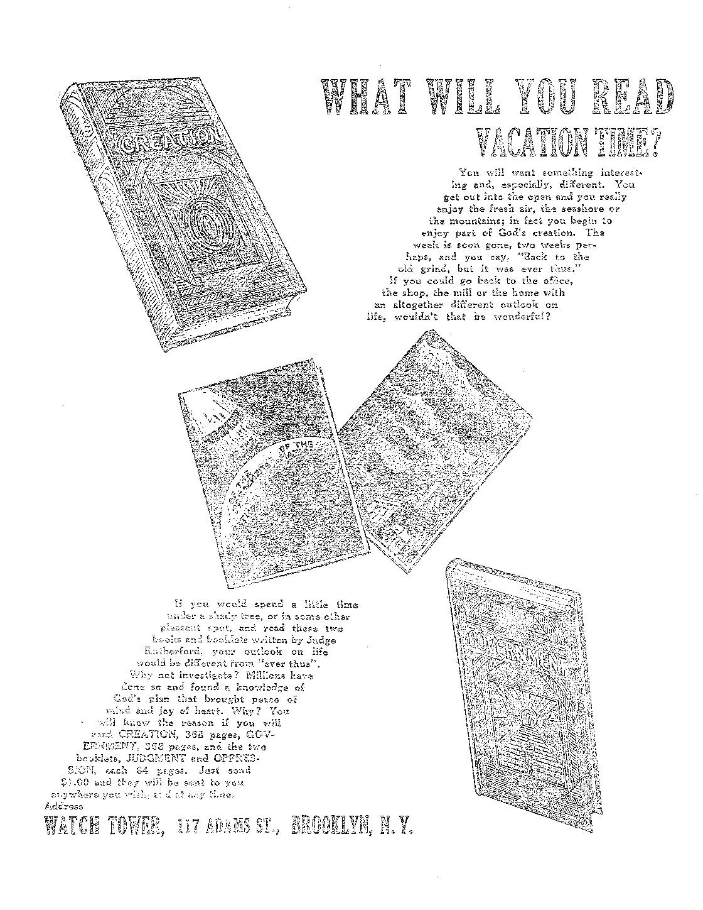

A JOURNAL OF FACT HOPE AND. COURAGE.
■ in this issue '
USE OF EXPLOSIVES EVENTS IN CANADA THE VISAGRAPH “BENEVOLENT5’ TOLEDO A DYING INSTITUTION
MEMBERS OF GOVERNMENT
sixth of a series of radio lectures on good government, by Judge Rutherford ■
EEEEElEEEEEEEEiiiEmiEIIEEEiiEHiHiliiESEliiEliinifiMIIIlIiiEliSEMEI
EVERY OTHER WEDNESDAY
5c a copy - $1.00 a year - Canada &. Foreign $1.50
Volume X » No. 256 ' July 10, 192 9
Contents
647
647
653
Home and Health
G55
of address, when requested,
Travel and Hiscel
Flood ......
Make Remittances to TUB GOLDEN AGE
Labob and Economics
Slavery on British Canals . ......
Social and Educational
Truth Gradually Sinking In .......
Cruel and Inhuman Punishments .....
Finance—Commerce—Transportation
Use and Misuse of Kxplosives..........
Double Transcontinental Air Mails........
Trade Thicks, etc. ..............
Political—Domestic and Foreign
State Versus Wai Department ........
Dislikes His Bedfellows ...........
Agriculture and Husbandry
No Danger of Food Shortage........
647
648
648
656
643
647
647
648
649
652
G54
G56
G18
650
G62
G71
A View of the V
luEQUIESCAT IN PACE
Remgiox and Fn iLOSoriiY
Published every oilier Wednesday at 117 Adams Street, Brooklyn, N. AL, U. S. A., by . WOODWORTH, KNORR & MARTIN
CLAYTON .T. WOODWORTH
Address: in Adams Street, Brooklyn, N. Y., U. 8. A. Editor ROBERT ,T. MARTIN . . Business Manager
journw I one month before the subscription expires.
a subscription. A renewal blank (carrying notice of expiration) is sent with the may be expected to appear on address label within one month.
Poreign Offices
British . , e B c 0 . . . e o . . 34 Craven Terrace, London, W. 2, England Canadian . o c .......40 Irwin Avenue, Toronto 5, Ontario, Canada
/! vstra'iasian , o 7 Beresford Rd., Strathheld, Sydney, N. S. W., Australia
South Africa-............6 Lelie Street, Cape Town, South Africa
Entered as second-class matter at Brooklyn. N. Y., under the Act of March 3, 1S79.
Volume X Brooklyn, N. Y., Wednesday, July 10, 1929 Number 256
■ i-v;;';."'.;" ■■■r,'......v: ■ - - ■ rr-.....--r- --------r......—r,.-----
Use and Misuse of Explosives
WITHOUT the use of explosives there would be no coal to keep us warm or to drive our trains or factories, and building operations would be almost at' a standstill because there would be no adequate way of sinking foundations or quarrying rock for construction purposes.
Many chasms have been bridged by this means, the first lines having been shot from shore to shore. Many lives in skyscrapers and on vessels have been saved by similar means. Many other lives have been saved by the railroad torpedo, forewarning of impending danger. The rocket was much used in bygone years by steamers in distress.
Explosives are necessary in the pursuit and capture of whales, in excavating for telegraph and telephone poles and for fenceposts, in blowing up buildings to prevent the spread of conflagrations, in destroying wrecks and in removing impediments to navigation.
They have been used in driving water out of quicksands, in breaking boulders, grubbing stumps and felling trees, in preparing the soil for cultivation, in breaking down ice dams, and in ridding an area of dangerous wild beasts, and for many other purposes the value of which to mankind can not be questioned.
In the peace year of 1925 there was produced in the United States 4,053,522 pounds of smokeless powder, 160,946,900 pounds of blasting powder, 78,951,184 pounds of nitroglycerin and 282,310,576 pounds of dynamite. There was also produced 60,711,877 pounds of other permissible explosives.
A recent use for explosives is the charting of geological structures by their aid. By a delicate system of timing and recording the wavy reflection of light from the surface of a bowl of mercury, very accurate knowledge may be had of what lies hundreds of feet out of sight beneath the earth’s crust. This knowledge is of special value to oil men.
Illegal Use of Explosives
Most people know that it is wrong to start an explosion behind a pellet of lead with the barrel of the gun pointed at a fellow man. All the principal nations, after some hundreds of years of contrary practice, have now discovered that this thing is as illegal if done by a thousand men or a million men as it is if done by one man. You have heard of the Kellogg Peace Pact.
It is estimated that seventy percent of the crimes perpetrated are committed by the aid of explosives. Besides the regular street warfare of Chicago and other places, there is some illegal use of dynamite for stunning fish.
Occasionally somebody intentionally or unintentionally creates a new explosive. Sometimes this is useful, and sometimes again the pieces of the inventor are found and it is not known just what he did, and whether it was legal or not.
Philip Rosenblatt, a seventeen-year-old student of chemistry, was dissatisfied with the torpedoes sold for Fourth of July celebrations. He made some better ones out of potassium chlorate, but the first ones blew out the end of the flat in New York where he lived, seriously injured an infant and gave Philip a fractured skull.
Other Illegal Uses of Explosives
Bombs were illegally used to kill men during 1914-1918, were illegally used for that purpose before, and have been since. The bomb squad of the New York police is sometimes busy with a job that is none too pleasant and none too safe.
Occasionally their fears go for naught. A New York lecturer gave an illustrated exposition of methods of preventing crime. It was enlivened by wax bombs, a sawed-off shotgun, and a string of genuine machine gun cartridges. A Chicago man, president of the Employers’ Association, telegraphed for the exhibit. A negro porter was told to pack it, which he did with bulging eyes. When he delivered it gingerly at the post office, and breathed his suspicions of the contents, there was great excitement for a while; but it subsided.
C43
A clerk in the Chicago post office did find a bomb in the mails, reported it, and gained a promotion. A New York postal clerk read the account. It looked good to him as a means of getting a promotion, so he made a bomb and then found and reported it; but he got caught at it and was worse off than ever.
Occasionally an explosive plant blows up, sometimes with terrible consequences. The destruction of the huge navy ammunition depot at Lake Denmark, N. J., was one of the most awful explosions of history, as was also the demolition of the Lehigh Valley piers in 1916, the latter stored with millions of dollars’ worth of munitions on the way to the World War.
When a great explosion takes place the results are terrifying for many miles around. About a year ago an opera, troupe in Philadelphia were singing Parsifal and had just got to the place in the production where they ask for a sign from heaven when it seemed as though the whole back of the stage wTas being blown out. Gradually the stage was flooded with lights, the massed voices off-stage rose in crescendo and the opera proceeded exactly according to schedule. It was found later that the great explosion which occurred just at the pivotal point in the opera was the blowing up of a nitroglycerin plant at Gibbstown, N. J., eighteen miles away.
The Science of Explosives
The Arabians, the Chinese and the Hindus are all accredited with the first discovery of gunpowder. The idea of using the powder in a gun was first advanced by a, Saxon monk, Berthold Schwarz, in 1.313 A.D. The explosion of gunpowder is due to the sudden formation and expansion of gases.
When wood is ignited in contact with air it burns, giving off heat and light, superheated stearn and carbon dioxid. The more finely the wood is subdivided, so as to expose a greater’ and still greater surface to the air, the quicker the combustion. When the wood is reduced to dust, and is iWxed with dry air, the combustion is instantaneous, and an explosion results. Any combustible substance, finely divided and intimately mixed wuth air, will explode. A volatile liquid or a gas is such a substance.
Besides the explosion by simple combustion above described, there are certain substances, such as nitrogen ehlorid, nitrogen iodid and mercuric fulminate, which, if heated, struck or rubbed, undergo an almost instantaneous decomposition and explode. These constitute detonating explosives.
An explosion may be brought about by a flame, a spark, an incandescent body, by friction, by percussion, concussion, pressure or chemical action, all depending upon the chemistry of the material to be exploded. Detonating gas, so called, is a mixture of two volumes of hydrogen to one of oxygen. The inflammation, of this explosion extends almost instantaneously throughout the entire mass, the hydrogen being ignited at every point at once.
High explosives, such as nitroglycerin, are quick, shattering and crushing in their effects. In breaking boulders, after the charge is laid the confinement is increased by what is called plastering, i.e., by the placing of one or two shovelfuls of earth over it before firing.
Low explosives are slower in their action and are used whore it is desired to lift or push a load or a projectile. When a high explosive is detonated the gases are freed so fast that the air acts as a tamping agent: but when gunpowder explodes the gases are generated so slowdy that they have time to move the air. These phenomena have led to the erroneous belief that gunpowder explodes upw’ard and high explosives downward.
One Explosion Causes Another
In the operation of explosive plants it is found in practice that one explosion is the cause of another. Hence it not infrequently occurs, as at the great navy department explosion at Denmark Lake, N. J., that one mill or magazine after another goes up until there is nothing left.
By the method of instantaneous photography it is now possible to tell exactly what happens when an explosion takes place. The camera is so quick that it catches the bullet several times on its way to its mark, revealing exactly its effect upon the air through which it passes.
New explosives are being discovered constantly. A recent one has radium as an important ingredient. Another is a combination of soot, coal dust, alum and liquid air.
An explosion outside of a building moves the building toward the explosion, not away from it, The suction caused by the uprush of gas is what does the trick.
The largest single blast ever fired was that used in blowing up Hell Gate in the East Biver, New York, October 10, 1885. There was used in the blast 250,399 pounds of rackarock and 42,331 pounds of dynamite. Preparation for the explosion was carried on for years. It was a complete success.
There seems to be a relation between big smells and big noises. The chemical toluol is the basis for artificial musk and for the dreaded TNT. Carbolic acid is the starting point for artificial rose-oil and for the explosive melinite. All these things come from coal-tar.
Gas Explosions
Almost every automobile in existence is propelled by a series of gas explosions, which shows that a gas explosion is all right if you can keep it in its place; but when a whole city starts to explode, as London tried to do in December, 1928, you involuntarily wonder if the thing can not be overdone. More than a mile of roadway blew up, overthrowing vehicles, damaging buildings and sending up sheets of flame fifteen feet high. Manhole covers were thrown up and came down through the roofs of buildings. Seventeen persons were sent to hospitals, but, oddly enough, nobody was killed.
Only two months after the London explosion of gas mains Boston had one, with similar results. One street was torn up for five hundred feet. In places the whole street level was lifted six feet, Paving blocks and manhole covers were sent a hundred feet in the air. Twenty-six were injured.
Three days after the Boston explosion a municipal gas tank in Berlin blew up, completely wrecking the immediate surroundings; but as the explosion took place at an early hour of the morning only five persons were injured. It is believed that at least one of these explosions followed the bursting of underground gas pipes due to frost.
We often read of explosions of gasoline in kitchens, usually the fault of the users, but occasionally that of oil-burning stoves. The failure to note that a pilot light is burning or that cooking operations are near may be sufficient to ruin a home and kill its inmates. Keep gasoline away from fires.
A man at Bradley Beach, N. J., was having the tank of his automobile filled with gasoline. Thoughtlessly he pulled out a cigarette, lighted it, the gasoline tank exploded, the car went up in' flames, he lost his wife and his son, and five other persons were badly injured. So much for the fool cigarette I
Many explosions are the result of vacuum between the hair and eyebrows. Thus an absentminded visitor in a fireworks factory at Cliffside, N. J., lighted a cigarette and tossed the still burning match into a keg of gunpowder. The resulting explosion shattered the windows in five municipalities.
Not a few homes have been wrecked in celebration of the Eighteenth Amendment to the Constitution. An improperly-made still caused the death of two children in Bethlehem recently. The father was trying to find some way to give his babies a better start in life than was possible on his wages of $18 a week. He tried making moonshine, and the babies got the start all right!
A can of paint blew up on a New York subway train. There have been explosions of compressed air tanks. Sometimes locomotive and other steam boilers explode; and the astronomers tell us that sometimes stars explode.
Dust Explosions
It is estimated that there are 28,000 plants in the United States, employing over a million persons, and with an annual production of ten billion dollars, that are subject to the hazard of dust explosions. Among the mills that may explode as a result of inflammable dust in the air are those engaged in the production of starch, feed, cocoa, spice, sugar, corks, woodenware and aluminumware. Flour, oatmeal and soap may explode.
In a barrel or sack, flour is harmless; but when the air is filled with fine particles of it the striking of a match might cause an explosion that would wreck the premises. A grain elevator at Chicago became saturated with grain 'dust and exploded with a tremendous loss of life and property. In another place a workman lifted the lid of a bin containing flour, to see how full it was. He struck a match and the resulting explosion injured him severely.
During one season, in the state of Washington, three nundred threshing-machines exploded, with much damage and a large property loss. It was found that in the dry air the accumulation of dust within the threshers was set afire by static electricity. The machines are now equipped with miniature lightning rods, preventing the spark. This has ended the explosions.
In six years, in the United States, dust explosions caused a loss of 133 lives, injuries to 130 more and a property damage of more than $12,000,000. One-half of the property damage occurred in grain elevators. The resultant investigations have even led some to conceive of the possibility of using grain dust as an explosive in warfare.
Mine Explosions
All hope for the time when it will not be necessary for their fellows to go down into the bowels of the earth to dig for fuel, for ever and anon there are mine explosions that make the heart sick to hear of them. The explosions are of two sorts, gas explosions and dust explosions.
In the twenty-one years in which the United States Government has been investigating mine explosions there has been but one explosion in a mine in which safety lamps were used exclusively. It is a remarkable fact that the mines known to be the most dangerous are in actual operation the safest. The reason is that in the gaseous mines safety lamps are required, ventilation is generally better, explosives are of a higher type, the miners’ shots are more painstakingly prepared, and electric connections, if used, are more carefully safeguarded.
In the bituminous regions collections of coal dust are scattered by what is called rock-dusting. When danger arises at a given point a small cannon is hurried to the place and a charge of black powder is fired which scatters the dust in all directions. Indiana has a state law making the rock-dusting of mines obligatory.
The United States Government Bureau of Mines recognizes six methods of preventing coal-dust explosions: lessening the production of the coal dust, preventing it from being spread through the mine, preventing it from being ignited, preventing it from being raised in the air by a concussion or air blast, covering it with rock dust or fine ashes, and erecting rock dust barriers. We conclude by reprinting two interesting paragraphs from its recent bulletins:
Everyone who works in a coal mine must at some time have thought of the possibility of an explosion, and what it would be like. But you should do more than think. You should plan what you would do if an explosion caught you in the mine. Your natural impulse would be to try to get out as quickly as possible, and undoubtedly this is the best thing to do in most cases. But quick decision is necessary, and so you should plan beforehand what would be your best way of escape. You should know the system of ventilation in your district of the mine, the course of intake and return, so that you may recognize the meaning of the movements of air after an explosion that you have luckily escaped. ... If any current is moving, the best way generally is toward the incoming fresh air. This is particularly true if the intake is through an airway, and not on the haulage road, because in the latter the explosion, on account of the coal dust present, is likely to be more violent, and therefore to cause more roof falls. Even under the best circumstances, if the explosion has passed out by the section of the mine in which you are working, there is likely to be some afterdamp in the intake. If there is much afterdamp and you are far in the interior of the mine, it is not wise to try to push out through the bad air, because if you do you will surely be overcome. . . . On the other hand, it may happen that the incoming air to the section in which you are working is the return air current from the section in which the explosion occurred. In that case, if the air is not already fouled go with the current, if there is any, and keep ahead of the afterdamp. If the air is very bad you should not try to penetrate it, but should retreat tovrard the face, propping open any door that may shortcircuit the smoke and afterdamp and erect stoppings from whatever material is available.
What can be done by building stoppings or brattices was strikingly shown at the time of the Cherry, Ill., mine fire, in which a group of 22 men who could not penetrate the smoke on the main entry, retreated into a pair of entries and took off a door to short-circuit the current that carried smoke. They then went in by this point and in both the entry and the air course built stoppings with refuse. The stoppings were put up tight against the roof. One man in the group was lost by trying to go out through the smoke, but the remainder were rescued seven days later. . . . There have been numerous similar illustrations showing that men who have become excited and tried to get out regardless of the afterdamp, have been lost, whereas others who have kept calm and used their wits have been saved.
Air Mails to the Argentine
LONDON now has an air mail service to the
Argentine, making the trip in eight days, instead of eighteen all the way by steamer. The mail flies up the coast of South America and flies again from the Cape Verde Islands to Spain. The journey across the Atlantic is by steamer, and across Spain and France it is by rail at night.
Coffin Nails Start Fires
AT BARNARD College recently three fires were started all on the same day by cigarettes that the girls had discarded too hastily into waste baskets or other receptacles. Years ago a New England hotel man made the statement that during his experience he had been in seven serious hotel fires, every one of which was started by a cigarette.
Power Trust Grabs Newspapers
rpiIE Power Trust has just grabbed a string of newspapers in the eastern part of the
United States, some of them very powerful, or supposed to be. Among the papers thus bought out . are the Boston Herald and the Boston Traveller, also the Brooklyn Eagle. As soon as the Power Trust has finished its job of gathering in the papers the remaining time required to subjugate the whole country should be relatively brief.
Thirty-eight Cents an Hour
THE Aluminum Company of America is greatly interested in developing the American citizen. It recently advertised for one hundred laborers for outside construction work. The men must be over 21 and under 45 years of age. They must be in good physical condition and must work 10 hours a day. The wages were to be 38 cents an hour. The Aluminum Company hopes that by the time these men are 45 they will have saved enough out of these wages that they may be made directors.
Slavery on British Canals
T N ITS issue of March 31, 1929, the London
Sunday Express makes the charge that slavery on England’s vast network of canals is common, that children are sold for sums ranging from thirty shillings to two pounds. In instances the price paid has been as high as five pounds. The work requires walking ten to fifteen miles a day in all weathers, and results in seven-year-old children bent double with the terrible strain. Does Britain need Christ’s kingdom, or is this arrangement Christ’s kingdom? What think you?
Business Becoming More Intelligent
Ralph Hayes, vice president of the Chatham
Phenix National Bank and Trust Company, declares that business is becoming more intelligent, having at last hit on the great idea that in another war every salvo of artillery would hit a debtor and every bomb dropped by airplane would kill a customer. And to think that Big Business has learned all this in only ten years! Surely all can see that the Millennium is at hand.
No Danger of Food Shortage
Professor Firman E. Baer, of Ohio University, points out that every pound of nitrogen rightfully used will produce 150 pounds of sugar beets, 100 pounds of potatoes, 45 pounds of hay, 20 pounds of grain or enough grass to yield 20 pounds of milk. He declares the evident truth that food supply is far ahead of population and that if every possible means of increasing the food supply were utilized the markets would be hopelessly glutted within a few years.
The Posture of Health
Captain Godfrey Rodriguez, health expert, calls attention to the posture of health. He says of the dog: “Dogs have natural posture. You never see a healthy dog slouch along with hanging head. The dog’s upper stomach is held just under the ribs where it should be, and the chest is out. The same is true of the horse. But we see men with protuberant abdomens, with carriage that is little more than a drag. They are veritably walking on their stomachs. That organ has dropped several inches at least, down on their intestines, a heavy weight that hinders digestion and elimination.”
No Doubt About the Flood
THE archeologists who have been digging at
Ur of the Chaldees claim that in the eight feet of water-laid clay -which separates the lowest strata discovered from that of the one next above they have the positive proof that the flood of Noah’s day was a reality. The fact that the Bible is the Word of God becomes more and more evident every day we live.
Truth Gradually Sinking In
RECENTLY, at Islington Chapel, North London, the Reverend Joseph Shepherd, chaplain in the World War, said: “If there is another war, every minister of religion ought to go out with, the first draft. It is cowardly to send schoolboys to suffer and die because we have failed in our mission of peace.” The truth is gradually sinking in. Next somebody will discover that every politician and every banker should be included in the same draft. '
Science and Fallen Man
Dr. Carl Babus, of Brown University, recently made the following striking statement:
“I am by no means sure that to teach the people at large more science will not do more harm than good. Science lends itself to the arts of rear, of aggression, of exploitation, of sabotage, quite as much as to the arts of peace.” This shows plainly that what fallen man needs is not more knowledge of temporal things, good as it is, so much as a knowledge of God and a desire for His favor.
Cruel and Inhuman Punishments
TAESPITE the fact that cruel or unusual punishments are expressly prohibited by the
United States Constitution they are still practised in many prisons of the country. Joliet is just now in the limelight for manacling prisoners to the bars with their hands outstretched nine hours a day. The warden of the prison calmly says that he sees nothing inhuman about it. Former Judge Bruce of the same state said: “The purpose of the punishment, it is candidly stated, is to Treak’ the prisoner, and it certainly accomplishes its result if long continued. It leaves to be returned to society at the expiration of his sentence a crippled and brutalized man.” Why not make the care of the socially sick a matter of law instead of the whim of the warden ?
Photographing the Burglar
THE old-style burglar is out of luck. A new device rings a bell, strikes a light, takes his photograph and records Nie time all in-stanter. This makes it necessa y for enterprising burglars to get jobs with the Porver Trust or on the public service commissions or some other place where profits are swifter, surer and less dangerous.
Great Lakes- on the Rampage
WET weather, steady and prolonged, has given the Great Lakes more 'water than they can handle, so much so that several of the states and cities that brought suit against the Chicago drainage canal even considered withdrawing the suits. It is a hard job to make the excess waters of a continent behave.
Preachers Get to Work
FINDING that it does not agree with them to lie abed all day, the preachers of "Wewoka, Oklahoma, have agreed that each Monday, Wednesday and Friday afternoon they will pitch horseshoes on the lawn of the Methodist Church. This is very encouraging. It indicates that they see the time approaching when they will have to work the same as other people, and they are practising now, trying to get up some muscle. The next dispatches from Wewoka will probably call attention to their purchases of overalls; and at the last they will finally get alarm clocks, and the Millennium will be here.
Pittsburgh Glass Company
REFEERING- to the complaint of the glass companies that their business is being-ruined by foreign competition, The Nation looked up the record of the Pittsburgh Glass Company and said comically: “This poor little impoverished manufacturer notifies its stockholders that, after writing off $4,000,000 for depreciation, obsolescence, and depletion, and $1,200,000 for income-tax, it had left only a beggarly $8,000,000 surplus, equivalent to $3.90 per share of common stock, par value $25. In other words, this company was allowed to earn only 15.6% by its rapacious foreign competitors. Pity this poor mendicant and do urge Congress to drop still higher duties into its hat as it stands in rags at the doors of the Capitol.’'
Army Movements by Television -
XPERIMENTS now being made indicate that airplanes will be able to broadcast moving pictures of troops, fortifications, etc., for a distance of five hundred miles. The end of war draws on apace.
Mrs. Eddy Used Drugs
ND now a former director of the Mother Church of Christian Science testifies that
Mrs. Eddy employed physicians professionally, and took drugs on numerous occasions during the last ten years of her life; and so another paper bag is burst.
Seventeen Miles of Stores
T F THE 2,100 stores of the Woolworth Com-8- pany were arranged side by side they would extend over seventeen miles. There are days in which one-fifth of the entire population of the country enter these stores. They turn their money over eight and one-half times a year.
Miners Without Underclothing
URING the bitterest winter Britain has known in many years there was a distribution of cast-off clothing in one of the populous centers of southern Wales. The miners who came for relief were asked to try on the suits. They respectfully refused, and when pressed for the reason it was discovered that none of them had on any underclothing. Nor did one of them have an overcoat.
Double Transcontinental Air Mails
HERE is now double transcontinental air mail service. Mails leaving New York at 11. 00 a.m. arrive at Sam Francisco 4. 30 p.m. the next day; Los Angeles fifty-five minutes later. Mails leaving New York at 8. 00 p.m. arrive at San Francisco at 4.15 a.m. of the second day; Los Angeles fifteen minutes sooner. Returning, the mails arrive at New York at 7. 00 p.m. and 6. 35 a.m. The flying distance, New York to San Francisco, by the route followed, is 2,690 miles.
The New York post office is a money-making institution, each year turning over to the treasury of the United States about $40,000,000. In Manhattan and the Bronx alone there are about 19,500 people in its employ. From the offices in which they work they dispatch about 6,000,000 pieces of mail daily.
Liquor on the Leviathan
ECAUSE the Leviathan has announced that on its westward trips it will supply alcoholic beverages to its passengers, representative F. H. La Guardia, of New York City, has been getting after Secretary Mellon. He said in part:
The government cannot disclaim knowledge of the possession, use and sale of liquor on these ships. The government holds a mortgage of over 75 per cent of the value of every one of these ships. The government is exactly in the same position as the owner of a building who knowingly permits the violation of the Prohibition Law by one of his tenants and indirectly participates in the proceeds of the bootlegging business by receiving and accepting the rent therefor.
Rifle-Shooting in the Church
NDEB this heading Captain H. L. Harker, in The American Rifleman, gives his experiences in getting a church in Baltimore to organize a rifle club among the boys in the neighborhood. The boys do their shooting in the basement of the church.
In a letter to Captain Harker the pastor of the congregation says:
If any pastor desires to interest a special “gang” which is difficult to manage, or has a group of boys in his school which seem listless and uninterested, let him ask some rifle association member to organize a rifle club. The boys will eventually take a keener interest in the church and have a greater appreciation for it. '
Gallo Versus Cero Versus Fantasia
TN MASSACHUSETTS a few years ago a man named Fantasia was killed by a single bullet. One Gallo was tried for the crime and was sentenced to death, the revolver and the mortal bullet being produced in evidence against him. Fifteen months later, in the same Massachusetts court, before the same judge, the same revolver and the same mortal bullet were produced in evidence against a man named Cero for committing the same identical crime and Cero also was condemned to death, which is a way they have in Massachusetts. However, to the credit of the presiding judge he has now granted new trials to both men, not being easy in his mind as to how two different men could fire the one revolver and kill the same man. Massachusetts is still in the throes of the dark ages, but occasionally a Massachusetts man does use his head and his heart.
THE enormous extent to which automobiles are being used as a means of travel causes every one to be interested in good roads and the financing thereof. Under the caption, “Paying for Roads/’ TAe Dcmj Province of Vancouver states editorially:
The Loan Bill for this year has been brought down in the House. Hon. Minister of Works Lougheed has explained it. The members have found it a very interesting piece of legislation. The citizens of British Columbia ought to share that interest, and there is not much doubt that they will. As its title implies, it is a bill to enable the province to borrow money; the amount is $9,500,000; the main purpose of it is the building of roads. It is the largest amount ever borrowed for that purpose in the history of British Columbia. Perhaps we can distinguish the special interest of this bill in no phrase more apt than to say that British Columbia is buying roads on the installment plan.
The citizens of our provincial community, at any rate by tacit acquiescence, have endorsed this policy of building roads first, and then paying for them later on. We have no present intention of assailing it. But we think it is salutary to keep in mind clearly the thing we are doing in this matter, and to hint that it is a policy which ought constantly to be reviewed. The advocates of installment plan buying have received an immense encouragement from the practices of modern governments. They insist that it is not the same thing as Mr. Micawber protested against, the practice of spending more than you earn. But at least they do not deny that it is putting a mortgage upon the future, and when it comes to doing that, we ought to walk warily and watch our step.
We can note in this connection that the Legislature has deleted the words “wagon road” from the Highway Aet this year, and we can regard that deletion as an appropriate sign of the revolution which the motor car has made in our civilization. There are no more wagon roads in the country, for the reason that, in the old sense, there are no more wagons. Our roads now are all highways, and in a new sense. We have got to build more of them than we have ever had. We have got to build them wider and firmer and quicker than we ever built them before. The motor car has created an emergency. In order to make room for it, we have got to build costly roads, we have got to build them at once, we have got to build them faster than we can pay for them on the nail.
Mr. Lougheed, following the practice of his predecessor, finds the “service” of his road loan in the gas tax. The tax was imposed upon motorists at their own request, and it was earmarked in advance as the means of financing new roads. Last year it produced, roughly, $780,000, which was $130,000 in excess of the preliminary estimate of it. The policy of buying our new roads on the installment plan is practically the process of capitalizing the gas tax. The policy is endorsed as sound finance by most of our contemporary economists. The capitalized value of a revenue of $780,000 a year is anything from $12,000,000 to $15,000,000, depending upon interest rates and term of loan. As long as Mr. Lougheed borrows no more of his new roads than the capitalized value of his gas tax, he is not likely to meet with a hard criticism.
But there must be a limit to this policy and this process. The Loan Bill last year, also devoted mostly to road-building, was for $7,500,000. This year it is for $2,000,000 more than that sum. The gas tax is increasing its yield, and it may be expected to increase, in proportion to the increase of motor traffic in our streets and on our highways. Perhaps it is sound finance to capitalize our revenues from taxation, but we had better remind ourselves that the thing is not likely to be done without an increase in taxation. Already the suggestion has been made that the existing tax shall be increased from three cents a gallon of gasoline to four cents. It begins to appear that we can not indefinitely hypothecate our revenues without piling up the burden of our debts. Doubtless we must have the new roads, and doubtless we can not pay for them as we go. But a debt is a debt, installment plan or not, and the only way to pay a public debt is by taxation. We ought to remember these things when we pass these annual loan bills.
Unassimilable Immigrants
One of the outstanding problems of Canada is that of immigration. Every effort is being put forth to bring settlers to the country, and the Roman Catholic church, ever alert to strengthen its power politically, takes a keen interest therein. Her policy is to bring settlers from the countries of Europe that she dominates, locate them in colonies and then use their mass vote politically. While this is good politics for the Roman Catholic church, it is bad for Canada nationally and in many other ways. Speaking upon this problem The Sentinel says editorially:
The policy of colonizing our foreigners in the Western Provinces is a crime against Canada, and against the new settlers themselves. From the standpoint of the Dominion these people should be assimilated into our population as Canadians. If they are kept isolated from English-speaking Canadians how can they become familiar with the institutions of the country? Experience teaches that segregation of newcomers is the surest way of preventing assimilation. How could
it be otherwise? They live in communities where the language of the country is seldom, if ever, heard. The customs of the lands of their birth are maintained, the language of their national origin is all they hear, and they are separated from all that is Canadian as surely as if they were still in Central Europe.
It is not fair to the settlers. Their material and communal prosperity would be infinitely greater if they were merged with the native population, and learned the language of Canada, so they could understand the methods of work and business as practised in Canada. In a still greater degree it is unfair to their children born in Canada. They are natives of the Dominion carefully shielded from contact with their Canadian fellow-citizens, and thus handicapped if, and when, they go abroad from their national compounds to seek larger opportunities.
From the national aspect this segregation is deplorable in the extreme. What we need for the development of our great resources is to promote the homogeneity of our population. Free and constant intercourse with native Canadians is essential to that end. But we are not getting that. On the contrary conditions have been established in the West that make the Canadianization of the many foreign elements well-nigh impossible. As the Regina Star puts it:
“Here in Saskatchewan we have a score of nationalities kept within barricades to prevent their becoming full Canadians—a little Ruthenia here, a little Latvia there, a little Slovakia, a little Roumania, a little Poland, and so on. It is a crime against these people that they should be thus kept prisoners within their national compounds and prevented from full assimilation as Canadians. And it is mockery to list those who have been born and brought up within these foreign settlements, as among ‘the British-born,’ to impress strangers who cannot see beneath the duplicity of the description. ’ ’
If we arc to have a homogenous population we must begin at once to bring our new citizens within the circle of Canadian influence. In that task the provincial governments must take the responsibility. The members of the governments and legislatures must think less of their political hides than the welfare of their provinces. It is somewhat difficult to make politicians see that, unfortunately.
Canadian Timber Resources
The vastness of the timber resources of this country and the rapid development of forest industries are somewhat covered by the following article in a recent issue of The Daily Province of Vancouver:
With plans in view for taking a census of the forest wealth of Canada, the Dominion Government is seeking the co-operation of the various provinces. No doubt it will get what it asked for, as most of the provinces draw a very substantial revenue from their forests, and would like to have an authoritative estimate of the extent of these forests and their possibilities as a source of revenue in the years to come.
It is not mere curiosity that prompts the investigation into Canada’s forest resources. As going business concerns, Canada and the various provinces should, in justice to themselves and their people, have some idea of Canada’s wealth. Especially is this the case with regard to forest wealth, which may not, like minerals and farm lands and water power, wait the coming of the exploiter; for forests decay and are subject to destruction by fire. Canada should know what forest wealth she has in order that she may administer it providently. She should know, in order that she may give adequate protection.
More important, possibly, than determining our actual forest wealth is determining our potential forest wealth. Canada’s forest lands are so important to her as an industrial country that she should be cropping them systematically rather than exploiting them. But first it is necessary to determine with some accuracy just which lands should be devoted to forests and which to agriculture, and what species of timber would pay best on the lands to be devoted to forests.
Of course, figures regarding our forest wealth and forest possibilities are published from time to time. But these are estimates—intelligent estimates, possibly—not the fruit of actual surveys.
It should not be necessary to give Canadians proof of the importance of the forest industries to the people of this country. But a few figures may prove interesting. The capital invested in the various forest industries of the country is about $800,000,000. The sale value of the forest output in 1927 was about $475,000,000. In that year, we exported forest products worth nearly $280,000,000, and imported forest products worth $36,000,000. Our favorable trade balance in this category alone was, therefore, $244,000,000. This was greater by over $7,000,000 than the favorable balance on the country’s total trade. Canada’s forest industries, then, provided the whole of our favorable balance for 1927 and offset part of the loss on other industries.
What of the future? That depends on what we do to assure a future. This statement from Mr. E. H. Finlayson, director of forestry for the Dominion, indicates the possibilities:
“We have in Canada 1,100,000 square miles of land which is essentially forest land which should be permanently dedicated to forest production. Of this, some 310,000 carry accessible timber of merchantable size, and 560,000 square miles has some kind of young growth and is within reach of the present industries. This 870,000 square miles, with adequate fire protection, under the simplest form of management, is cap-
able of growing in perpetuity five or six times our our present requirements are approaching $500,000,-present requirements for all purposes.” 000 annually. The forest industry is an industry well
Five or six times our present requirements I And worth perpetuating.
ONCE a carpenter was overheard saying, "There are tricks in all trades, except ours”; then aside he remarked, "and we drive screws with a hammer.” Ask your carpenter, “Is that statement true?” If he answers, “No!” I’ll treat.
This incident happened in Washington: A certain grocer, now deceased, had a little store on the corner, wherein he handled two grades of coffee, the one selling at 22c a pound, and the umer grade at 32c a pound. Nor did he purpose to handle any higher or lower grade.
It chanced that one of his lady customers of long standing became dissatisfied with the 32c grade of coffee she had been using for the past eight years; and so she asked her grocer to supply her thereafter with a better grade. What, should the dealer do? This was the best grade he had in stock. He could not afford to carry a higher grade of coffee for just this one good customer. He therefore undertook to solve the problem by handing the lady a few ounces of the 22c quality, with the suggestion that she try it out and that if it proved satisfactory he would supply her future need with that grade at 42c a pound.
The good woman went home with that portion of 22c coffee, used it, and in two days came back overflowing with its praise, declaring that never again would she use that inferior 32e stuff, but that thereafter the dealer was to supply her with the 42c grade.
Upon learning these facts from the dealer, the writer laughed and joked about the matter; whereupon the grocer vehemently and with German gesticulations ejaculated: “Veil now, vot can I do? If she go somevare else for coffee, I can’d afford dot. She ish veil able und satisfied to pay me forty-two cents for dot coffee; und I am veil satisfied, too. So vot’s the use? Answer me dot!” What would the reader have done in this case if he had been in this dealer’s stead?
This one happened in Indiana: The storekeeper, a professed Christian, had in his window a pile of hams tagged 21c a pound, and well worth the money at going prices. His competitor down the street displayed hams marked 18c a pound; and people coming to the first dealer’s store twitted him about it. What should this good man do ? He felt that he could not afford to sell his hams at a lower price. He was puzzled.
After a while an idea came to his upper stoiy; and he proceeded to put it into effect. He took three of his good-valued hams and dragged them across the store floor, and then replaced them separately in his window, after having marked them 18c a pound. Customers came to his store, viewed the two piles of hams in his window, entered and inquired of the sanctimonious dealer as to why the prices differed on the hams displayed. Gravely the pious dealer replied, “The hams in the larger pile I guarantee; the others I am not guaranteeing.” People thereupon purchased the 21c hams, but scorned the 18c quality. What wTould the reader have done if he had been in the dealer’s stead?
This one is accredited to Michigan: A farmer’s goodly wife and a friend entered a store of excellent repute, and purchased ten yards of dress goods at 12-Jc a yard. While the dealer was wrapping the material up, a third woman came up to the counter and asked the price of that same piece of goods. The dealer replied, “That is 15c a yard.” The woman stepped aside; and the farmer’s wife remarked to the storekeeper, “I understood you to say that this piece of goods is a shilling [12-^c] a yard.” “It is, to you and to our patrons in general,” was the reassuring reply. “You see, we know our customers,” he continued; “that woman will not buy any thing unless she can bring the price down. 1 know her well. She will look all over the store, and then come back here and beat me down a cent or two a yard, and will finally depart, well satisfied with her bargain on that material at 13c or 14c a yard. You got it for 12-Jc. You see, we have to do this in order to hold her trade.”
In the language of the day; “Now what do you know about that!”
This is an Ohio incident: A shoe dealer unpacked a box of all-alike men’s shoes. Then he put in his window a sample of the same marked $12.50, and another sample of the same marked $7.50. He sold every pair of those shoes for $12.50 a pair. Nobody called for those at $7.50 a pair, nor wanted them. Puck was right.
What is the moral? Do the people know values as well as they know sports? Are the dealers or the people themselves to blame for these conditions ? Who wants anything that is cheap in price? .Most people allow price to determine quality. Is this not true? Why not study just a little more along quality lines and thus save money ?
This concluding incident involves an office man in Seattle: He took train for San Francisco. At Portland he received a “collect” telegram which read: “Your office gaslight is left burning.” He wired reply: “Please turn out the gaslight in my office.” At Ashland he got another telegram: “Can not locate your door-key. Where is it ?” He wired back: “Get key at residence, and turn out my gaslight.” At Bed Bluff a dispatch awaited him: “Your folks absent today. Can not get key.” In desperation the distracted man replied by wire: “For heaven’s sake get in somehow. Turn out that light.” At San Francisco a final “collect” telegram refreshed him: “Everything all right. Gas turned out.”
Flow much did the man save by getting that light turned out? He was gone just a week.
SOME months ago we made mention of the
Visagraph, the marvelous invention by which the blind may be taught to read any book, printed in ordinary type. We now have a letter from the inventor and are privileged to give some further information regarding the device.
The Visagraph is the invention of Robert E. Naumburg, Winchester, Mass. In November, .1926, he attended an entertainment given by t h e blind. The Visagraph is the practical e x p re s s i o n of loving sympathy rising up in his heart thereafter. He began work on it the morning after the entertainment.
Robert E. Naumburg, inventor of the Visagraph, Is shown giving a lesson to a blind student, who is reading an ordinary printed book. Mr. Naumburg is now perfecting the Silent Visagraph, so that those who are both blind and deaf may read ordinary books.
Mr. Naumburg’s invention makes use of the pantograph and the selenium cell to accomplish his results. The cell is a, conductor of electricity when exposed to the light, and is an insulator when it is dark. As the pencil of the pantograph is drawn several times across the face of the letter the dark lines are indicated as to their frequency and position and the electric current is broken or renewed to suit.
The electric signals made by crossing the lines of the letters may be visible, audible or sensor y. In the first Vis a graph made the signals were audible. In a new model they will be made sensory, so that those who are both blind and deaf may have the privilege of reading.
Hereto fore it has been impossible for the blind to read any books except those which have been specially prepared at great expense with raised or punched letters. Vvhen Mr. Naumburg’s invention reaches the commercial stage, the whole field of printed literature will be open to the sightless. From the printer’s angle, the Visagraph presents no problems. All that is required is good plain printing,
T N 'A letter written October 21, 1928, Secretary of State Frank B. Kellogg said, “We are all determined that the curse of war shall not again devastate nations. The most certain insurance against this is the training of the thoughts of men in the ways of peace.”
Three weeks later he urged thoughtful men “to inculcate into the minds of the people a peaceful attitude, teaching them that war is not only a barbarous means of settling disputes, but one which has brought upon the world the greatest affliction, suffering and disaster”,
But in the Infantry Journal Major-General Douglas McArthur tells us, on the other hand, that “Every male brought into existence should be taught from infancy that the military service of the Republic carries with it honor and distinction, and his very life should be permeated with the ideal that even death itself may become a boon when a man dies that a nation may live and fulfil its destiny”.
The chain stores and the Power Trust will make the American people know all about that destiny before long; but the question which naturally arises in the mind is whether the ideal of the State Department is the right one or whether the War Department has the right objective.
The War Department is not in any doubt on this subject, however, and it is not taking any chances. It believes that men who have absorbed in childhood the truth that wax' is the greatest of disasters, that nothing justifies it, that it can always be avoided and that military leaders are rather to be pitied than praised, are not good soldier material and will never make an army. Hence the War Department is out-Kaisering the Kaiser in filling American universities with the war spirit, and is fighting tooth and nail to make the objectives of the State Department impossible of attainment. This is done through sex appeal.
Syracuse University is a great institution where men are trained for the ministry of the Methodist Episcopal church, and presumably the women are trained to be their wives. If you wish to see how the sex appeal is worked at Syracuse, get a copy of the Syracuse Herald of November 1, 1928, and see the “Officers of the Syracuse University R.O.T.C. (Reserve Officers’ Training Corps) with women student sponsors of the unit”, seven of the officers with ten of the women students.
O1' you can turn to another picture and see that While the student soldiers stood at attention, Major George S. Clark, commandant, pinned the insignias of rank on the sponsors. He is shown giving Miss Mary O’Reilly her captain’s bars”. (Get the Methodist name! Make America Catholic!) .
Don’t get the idea that the sex appeal is confined to Syracuse University. You may yourself have seen in your own home paper the picture of a beautiful woman in military uniform, with the information below it that it is “Miss Evelyn Hoskins, chosen as the most popular co-ed of the University of Tennessee, the award carrying with it the title of colonel in the R.O.T.C. regiment” and that “Attired in full military regalia she is in the reviewing stand at every weekly dress parade”. What effect do you suppose the War Department thinks this will have on the average young man and the average young woman student in the University of Tennessee? Exactly the opposite of that desired by Secretary of State Kellogg.
In any one of a hundred other papers you may have seen pictures of other beautiful young women and beneath them the following: “Nifty Colonel. The best looking Colonel in the country! University of South Dakota students call Miss Eva Jean Leslie. She’s honorary Colonel of the R.O.T.C. at the University, and in this capacity leads the grand march at the school’s annual military ball.”
Or the advertising man (propaganda artist) phrased it this way: “Oh, it’s great to be a soldier when the officers are as nice-looking as El Delle Johnson, 19-year-old Oldsburg, Kansas, girl. Miss Johnson has been made honorary Colonel of the Kansas State Agricultural School R.O.T.C.” The same taxpayers that keep bread in Secretary Kellogg’s mouth keep it in the mouths of these publicity men that are working against him.
The same thing is going on in the New Bedford (Mass.) High School, the Indianapolis high schools, the University of Washington, the Oklahoma Agricultural and Mechanical College, the University of Maryland, the Creighton School of Omaha, the University of Kansas, the Los Angeles High School, the George Washington University, the San Diego high schools, the University of Illinois, the Washington (D.C.) and Atlanta high schools, the Kansas City high
schools, the University of Minnesota, the University of Florida, the University of California, the University of Missouri, the North Dakota Agricultural College, and so all over the Union.
Then, too, war is being popularized among the young men of the country by the placing of 2,000 horses, fed and equipped in a splendid way by the United States Government, in the various educational institutions of the country. Naturally, young men like to ride horses at Uncle Sam’s expense. Why not? But it works against Mr. Kellogg’s ideals.
What the government’s horses are used for appears from The Princeton Weekly of January 25, 1929: “During the Summer permission was granted by the Government for the shipment of twenty new ponies from the Demount Depot at Fort Reno, the Polo Association paying the freight. A group of officers spent the summer training these ponies so that they would be practically ready for fall practice.” Naturally, young men like to play polo if they can do it without any expense.
Bayonet drills have been abandoned at the universities because they were not popular. The boys did not like to read the following from the Manual of Military Training:
Bayonet fighting is possible only because red-blooded men naturally possess the fighting instinct. This inherent desire to fight and kill must be carefully watched for and encouraged by the instructor. It first appears in a recruit when he begins to handle his bayonet with facility, and increases as his confidence grows. With the mastering of his weapon there comes to him a sense of personal fighting superiority and a desire for physical conflict. He knows that he can fight and win. His practice becomes snappy and full of strength. He longs to test his ability against an enemy’s body; to prove that his bayonet is irresistible. He pictures an enemy at every practice thrust and drives home his bayonet with strength, precision and satisfaction. Such a man will fight as he has trained— consistently, spiritedly and effectively. While waiting for the zero hour he will not fidget nervously. He will go over the top and win.
... an instructor’s success will be measured by his ability to instill into his men the will and desire to use the bayonet. This spirit is infinitely more than the physical efforts displayed on our athletic fields; more than the enthusiasm of the prize ring; more, even, than the grim determination of the firing line—it is an intense eagerness to fight and kill hand to hand. ...
In a bayonet assault all ranks go forward to kill or be killed, and only those who have developed skill and strength by constant training will be able to kill. There is no sentiment about the use of the bayonet. It is a cold-blooded proposition. The bayonet fighter kills or is killed. Few bayonet wounds come to the attention of the surgeon.
ONE of our subscribers in Cleveland writes that they have a new pastor in his church, or at least the church he used to attend. It seems that the new pastor, having no regular employment to keep him busy, was racing up and down the streets in an automobile. His car struck a woman seventy years of age, killing her instantly.
After the killing the ear swerved over the curb, and then its sanctified driver sped on at about fifty-five miles an hour. Another pursued him and apprised him of the fact that he had killed the woman. Nevertheless, he proceeded to his home, later maintaining that he thought he had run over a dog, because he had heard one yelp. The minister was fined $50 and sent to the workhouse for thirty days.
Our subscriber wants to know -what we think of his new pastor, and we reply indignantly that we never use that kind of language.
THE New Era Enterprise is dead. Sometime ago the post office authorities took away the second class mailing privileges on account of alleged irregularities. And to my knowledge some of the friends are still addressing letters to the New Era Enterprise. It is to be hoped that none of these contain subscription money.
METHODS OF TEACHING
THE Philadelphia Ledger of April 10 contains the following dispatch from Washington. It is evident that at least one of the United States Attorneys resents the company of some of the men into whose association he has been thrown. It is interesting to see what he has to say about men that would be willing for $2.50 to become police informers, and their occupation, or lack of occupation. The fact of the business is that when any person gets to a place where he has no regular occupation, he gets to be a nuisance. Overalls and alarm clocks for them all’ It is a dire necessity for the human family.
The worst type of paid police informers are those who identify themselves as "ministers of the Gospel,” the Citizens Service Association was told last night by Assistant United States Attorney Renah F. Gamaliel'.
The association was formed several months ago with a membership drawn from seventy-five Washington churches and pledged to report any information they might obtain of liquor law violations. Similar groups have since been organized in other cities.
Advocating the establishment of a force of Government agents to take the place of police spies, Camalicr declared that "the paid police informers are the lowest form of individual we have in law enforcement today. ’ ’
"They are no help to prohibition enforcement,” he said. ‘ ‘ They are not men, they are creatures. It is not fair to the judge, jury, prosecutor or defendant to put cases made by common police informers in court.
"But worst of all are some of these paid informers who tell me they are ministers of the Gospel when I ask them their occupation after they have told me they have made ‘buys’ from bootleggers and are ready to testify against them in court. It is most em-barassing to me and a disgrace to the church to have to call these men ‘Doctor’ and ‘Reverend’ when they take the witness stand.”
The rate of liquor law convictions in the District of Columbia courts will be increased, he predicted, only when a sufficient force of Government agents who draw their pay regardless of how many persons they send to jail on their testimony are employed to make cases against bootleggers.
“The man or woman who will send a man to jail for $2.50—and that is what police informers are paid—arc nothing but insidious creatures who ought to be in jail. Thank God, that’s where most of them end.”
By Dr. C. T. Betts
T NOTED last year
J- that a statement was
made in The Golden “practica
'Age regarding the wonderful method of conducting our charities in
Toledo, or in other words, compulsory plan of charity. I am enclosing our budget, which was published last night in the Toledo Blade. This is of exceptional interest because one corporation receives one-sixth of the entire amount of the budget, or $132,047. I do not believe there is a Catholic on the entire budget committee.
A systematic plan of solicitation is carried on here annually in factories and similar places of employment; there is no choice by the worker as to giving to this fund: he is compelled to give under penalty of losing his position. I might add
<500,000 population.
religion”
that the poor of the city who need assistance but are not associated with the forty various institutions mentioned can not receive any consideration by the organization called “The Chest”.
There was never a time in the history of Toledo when this city has been so prosperous. The factories are running double, and most of them triple time, yet you will note that the Chest authorities believe that we need almost a million dollars for charitable purposes in a city of
“The Workers” in this chest drive, I understand, wall be banqueted at one of the largest halls in Toledo. Besides, they have a dinner every noon of the entire week they are operating, and all these expenses are taken from the funds received for charitable purposes; in fact a certain percentage is included in the budget for this purpose.
The following is the list of the finances to be given to the corporation above mentioned.
I do not find in this list anything for the Pres byterian corporation, the Methodists, Central Christians, Bible Students, or any other religious organization, except one Lutheran.
Colored Working Girls’ Home ..................................$
East Side hospital .....................:
Flower hospital ........................................................................... 28,500
Douglass Community association ................. 10,000
Jewish federation ................................................................... 31,000
County council, American Legion
Luella Cummings home ...................................................... 15,351
Lutheran Orphans, Old Folks’ home ................ 16,500
Mercy hospital .............................................................................. 23,234
National Catholic Community home
Old Adams Street City mission .......
Robinwood hospital ................. 16,000
St. Anthony orphanage .................................................... 40,113
St. Vincent’s hospital ......................................... 42,600
Sisters of Good Shepherd (Marybrook school) ......................................... 16,600
Boy Scouts of America ..................................................... 28,500
Toledo District Nurse association............................ 62,500
Toledo hospital ........................................................................... 50,000
Toledo League for Hard of Hearing.....................
Toledo Newsboys’ association ............................... 12,000
Toledo Public Health association
Toledo Social Service federation ................... 71,000
Children’s bureau ..........................■....................$13,935
Family Service bureau .............................. 57,065
Women's and Children’s hospital ......................... 38,500
Women’s Protective association
Young Men’s Christian Association ..................... 61,000
Central Building .............................................$45,130
Young Women’s Christian Ass’n ............... 39,000
AND THE NATURAL RESULT
[By Dr. G. R. Clements, Editor of How To Live Magazine]
INSTITUTIONS, like nations and dynasties, spring up and flourish, then wither and fade, like the lilies of the valley.
The practice of medicine has been dying for a -hundred years. The distant rumbling warns us that its end is not far off. The flowers wither and fade, then sprout and grow again with the coming of spring; but the practice of medicine is passing, to return to us no more.
The practice of medicine is not founded on science. It is founded on superstition. It had its birth in the times of mental darkness, when men thought that all Nature’s forces had human traits and form, and that a god gave out the sunshine, while a demon sent the storm. Its remedies are poisons and knives, and its patrons and supporters of today are those who are deceived by its false propaganda.
To keep people in mental darkness as to health and disease, as it has done from the beginning, and to crush all competition, the medical profession, at this hour, is carrying out definite plans, well laid years ago. H. B. Anderson, secretary of the Citizens Medical Reference Bureau, New York, says:
The plan of organized medicine by which it seeks to suppress information to the public unfavorable to its program, is to place physicians in official positions on legislative committees, on all boards of health, on t he health committees of all welfare organizations, on boards of education, and so far as possible, upon the editorial staffs of newspapers.
This plan is brought out very frankly by an address of Dr. W. A. Evans, formerly commissioner of health of Chicago, published in the Journal of the American Medical Association, September 16, 1911.
On that occasion Dr. Evans observed:
"As I see it, the wise thing for the medical profession to do is to get right into and man every great health movement; man health departments, tuberculosis societies, child and infant welfare societies, housing societies, etc. The future of the profession depends on keeping matters so that when the public mind thinks of these things, it automatically thinks of physicians, and not of sociologists or sanitary engineers. The profession cannot afford to have these places occupied by others than medical men.”
Every one should know that the problem of obtaining a fair presentation of the facts against medicine, against vaccination and inoculation, against all that medical institutions believe, do, and practise, is made much more difficult in proportion to the extent to which organized medicine is successful in placing in official positions physicians in sympathy with its program.
But with all this, and in spite of its age, wealth, and influence, the theory of medicine is so contrary to all things in Nature, and so inimical to the welfare of the human body, that it is rapidly declining, while drugless methods are even more rapidly increasing.
In 1921 C. J. Whalen, M.D., writing in the Illinois Medical Journal, said:
Medicine as a means of livelihood lias arrived at the most critical period of its history. The existence of the doctor is at stake. Competition is becoming sharp, and the effect of this competition is reducing the remuneration of medical men. Many new healing sects and irregulars have made inroads upon the sum total of patients originally divided among a few schools. Thus, a score of cults are thriving, partly because they offer the sufferer a new hope, which the old schools have been unable to supply.
This medical doctor makes two frank admissions: (1) Medicine, in competition with drugless methods, has arrived at the most critical period of its history; and (2) the drugless doctors are offering patients a new hope, which medical schools have been unable to supply. This last admission explains, in a few tvords, why the practice of medicine is passing, to return no more.
'Writing in the September (1923) number of Health Culture, G. F. Butler, M.D., asks:
Is medicine, as a profession, losing ground in public estimation? Have physicians, as a rule, less of the confidence and respect than was once accorded them?
E. C. Levy, M.D., director of public welfare, Richmond, Va., in the December (1923) issue of the American Journal of Public Health, stades:
In spite of the fact that regular medical practice today is incomparably superior to what it has been, nevertheless there has never been a time when the people had less confidence in it.
Alice S. Cutler, M.D., medical examiner for the Pasadena (Calif.) Y.W.C.A., in the spring and summer of 1924, examined over 1200 girls and women for gymnasium work. In the course of these examinations, she was careful to ask each individual as to the kind of doctor consulted by the family in case of sickness. The information thus elicited was a serious shock to the nerves of medical institutions.
A summary of Dr. Cutler’s findings showed that—
10 percent consulted medical doctors;
10 percent consulted mental healers;
15 percent consulted chiropractors;
65 percent consulted osteopaths.
The Medical Pocket Quarterly for September, 1924, commenting on this showing, said that the gain in the number of adherents of osteopathy and other “cults” is due—
... not to any weakness in either diagnosis, therapy, or results on the part of the regular medical profession, but almost solely to the silence of the physician as contrasted to the outspoken, modern methods of publicity indulged in by its opponents. The time is surely ripe for an abrupt change to a policy which includes a plan for public education through the public prints.
The author of that frail excuse knew that he had nothing better to offer; and he also knew that every issue of the leading newspapers of the land is loaded with all sorts of medical propaganda, designed to deceive people as to the truth, urging them to consult their “family physician” for this and that, telling of the great medical discoveries of recent years, and so on.
Then the Illinois Medical Association, sorely worried by the fact that all reports showed a serious decline in the practice of medicine, decided to learn for itself why people are losing confidence in medical doctors.
This decision led to the first systematic survey ever conducted in this country to discover why medical practice is dying. The survey was inspired by James H. Hutton, M.D., a Chicago physician of wealth and influence, and a representative member of the Chicago Medical Society. He said:
The reason for the appointment of the committee to make this survey was the falling away among our patients to quacks and cults.
A clever newspaper woman ivas secured to supervise the work. She was directed to use her own discretion as to method, and to report without fear or favor.
Mrs. Investigator decided that a simply-worded question should be put to several thousand persons in all walks of life, all levels of the social scale, and all types of workers and thinkers. The question was: “What did you do the last time you were sick, and what led you to do itf”
Replies to the question were received from 5,719 residents of Chicago, and from 1,053 suburbanites, a total of 6,772. Of this number, only 931 admitted that they consulted medical doctors, leaving 5,841, or more than 86 percent, who stated that they consulted various nonmedical practitioners.
In addition to the sad showing made for the medical doctors, the great majority of those who were opposed to them and their methods were disconcertingly free and frank in giving their reasons for turning to the drugless doctors.
One large group complained that the medical doctor is negative, that he tells his patients what they must not do, and warns them of impending fatalities, while the chiropractor, naturopath, or osteopath always does something concrete and helpful.
Another group found fault with medical doctors’ habitually condemning and criticising drugless methods of caring for the sick, of which medical doctors know nothing, and who are so bigoted that they will neither question a patient who has been helped by a drugless doctor, nor investigate the methods employed.
Others objected to the “ethics” of the medical profession, declaring that the honest doctor is bound to protect the “crooked” and incompetent doctor, and that should one medical doctor disastrously blunder on a case, as many of them frequently do, nothing is done by the profession to prevent his repeating the fatal procedure in the future.
A large number said: ‘The last medical doctor that I consulted gave me the wrong treatment and I nearly died. I afterward went to an osteopath, chiropractor, or naturopath, and he cured me.’
This was the most destructive bombshell that ever hit the medical camp, and it sent “scientific medicine” soaring in the air like a skyrocket. For several months after it occurred, medical journals, by various statements and misstatements, tried to soften the reaction of the blow. The Medical Quarterly remarked:
We should mention that the 6772 persons were not all one class or society. They were dock laborers and society ladies, gamesters and lawyers, school teachers and garbage wagon drivers—a 50-50 division of the social scale.
This puts even a ivorse light on the revelations contained in this tremendously interesting questionnaire ■—had the lower classes of people turned from doctors to cults, we should have been able to say, ‘ ‘ They know not what they do”—but when the highly educated class, the thinkers, the business men, persons of other professions—when these fall away from us, it is time to watch our step, take care, and set about putting our house in order.
Then the same publication editorially goes on to offer gratuitous insult to the intelligence of these 6,772 persons, who for good and sufficient reasons do not agree with medical methods and theories, by asking the medical doctors what they intend to do about it. The editor says:
Are you going to sit quietly by, while quacks and cults steal your bread and butter right out from under your nose? Are you going to see inferior, ignorant louts, fresh from a three-day training in an “ ism. ” come to town and take out more money in a week than you make in six months, simply because they are unethical enough to spread the story of their ”ism” before the public gaze? Or will you fight fire with fire?
It is a sad reflection on the efficiency of medical practice to admit that men “fresh from a three-day training in an ‘ism’ ” are able to offer suffering humanity a new hope, as stated by Dr. Whalen, “which the old [medical] schools have been unable to supply.” This is still more striking when we recollect that the amazing records made by drugless methods have been made mostly on patients that have been unable to get relief under the care of medical doctors, and turned to drugless doctors, not with any hope, but as a last chance before giving up the search.
Medical institutions state that in the last twenty years the average length of human life has increased several years, and they claim that this is due to the vast progress made by “medical science”. Yet we have presented, from medical sources, facts to show that during this period of time there has been the greatest secession of patients and people from the medical profession that the world has ever witnessed.
As a direct result of the reaction of the shock of discovering how rapidly patients are turning to drugless doctors for relief, the medical profession, at this hour in this country, is striving with might and main to outlaw all drugless methods and obstruct progress in the field of health and disease, by getting laws passed in every state of the Union to make basic their theories of disease, remedies, and cures.
In short, medical institutions would dictate to the state, if you please, what shall be the basic principles of all schools of' healing for all time to come, and, by force of law, perpetuate and thrust down the throat of suffering humanity the erroneous medical theories of disease which the race, we observe, is struggling now to cast off.
In every state of the nation, in the halls of Congress, a medical union, affiliated with the drug and serum trust, is diligently striving, by means of deceiving propaganda and insidious legislation, to deprive people of the doctor of their choice. By the aid of law this union seeks to save from bankruptcy its tottering institutions, and to destroy the competition which its own ineffective methods can not meet.
Contemplate, if you can, a profession with centuries of experience in its particular field, with schools endowed with millions in money, with some of the most brilliant minds in the world, and yet so worthless as to be unable to compete with the weakest of its rivals, that are said to be so deficient in learning.
It would be unsafe to allow such an institution to write the laws of this land pertaining to the public health, or to trust a class of doctors who, in order to gain patients, must first enslave them. Nor should' this institution be suffered to dictate to the people, when its own survey shows that less than 13 percent of the public is favorable to its theories and methods.
THE article, “Man the Weaker Sex,” appearing in your journal recently, suggests that women who “eat no potatoes” and wear no “undies” are so healthy as to be immune from cold or heat. It seems that some explanation could be made without putting the sterner .and more sensible burden-bearer down under the peg heels as weaklings and inferiors.
'Why is it that women can go so thinly clad in wintry weather, with practically nothing on up to the knees, and then some, and nothing above that to keep out the wintry blast? Since there is little hid in this instance, and as all things hidden must come to light, it might be profitable to look through the gauze and lace coverings and find out, if possible, some of the reasons for all this "superiority”, if indeed any exists.
A woman’s clothing consists of thin silk or near silk hose, low shoes (if shoes we call them) perforated to the sole in some instances, with peg heels and with the soles ground down so thin that a small pebble can be felt through to the tender foot. Above this is a thin covering called "stepins” or “stepouts” on the bloomer order with a low-necked something to make up the dress. Even girls of tender age are denied comfortable underwear in order to deaden their sensibilities and prepare them for the fashion into which they are drifting.
On the other hand, the little boys are treated to warm underwear with long stockings up to the knees and trousers down to the instep, with good warm shoes; and sweaters, coats or blouses to protect their chests and get them in line for the presidency.
If the Devil is not in this game (for it is a game of temptation), who is? That it is of the Devil there seems to be no doubt. The inclosed illustration of four nude women exercising in the snow, all "indifferent to the fact that it is 10 degrees below zero”, warrants this conclusion, when coupled with the narrative in your journal recently describing the performance of show men who danced barefoot in a red-hot pot and handled fire and wallowed in it without injury, and which was ascribed to demonism.
If women are insensible to cold it is not because they are healthier or have better blood, because all eat about the same unbalanced mixtures and carry the same amount of waste with the same overwork for the liver and kidneys.
Simmered down, it is a state of mind. A woman thinks first, last and all the time of her looks. Fashion ordains that she must show her extremities, and to be seen they must be as nearly nude as permissible. Obedient, she ignores her suffering and plays insensible, though many are observed to shiver.
The extreme and slavish obedience to fashion is reached when they put on warm furs in the summer heat. Pride has gone to seed with women, and men are largely to blame for it, unless we put it all on the Devil. A lady remarked that if a girl put on low-heel shoes and a long dress, she would never get a beau. Women’s dress is not made for health, comfort or protection.
The spike heel that puts the weight on the ball of the foot can be only injurious to the delicate mechanism, and puts a certain amount of strain on the-pelvic organs. A chiropodist might make revelations on this line. But to get the sensation of high heels, stand on a sharp slant or hillside, toes pointing down, or tack a two-inch block on your own shoe heels. Women who become insensible to such inconvenience and unnatural walking might become partly insensible to cold. The Devil’s magic that enabled the performer to dance in the hot pot barefoot could even work this wunder among the many that he tempts. He thus deceives the whole world.
The so-called healthy girl of today does not compare with our mothers and grandmothers ■who bore ten to thirteen children, as compared with one to three for the vain woman of the present. Our mothers needed no dope or palliatives to help out in the ordeal of childbirth, as is now the practice, and which often destroys the child while attempting to save the mother the necessary pain to bring forth.
Fifty years ago a prospective mother would not even have a doctor in the house. She brought forth her young and, like the ’ German woman and the Indian, was up next day doing her light work. Here was health and superiority unknown but to few modern women.
It is stated, and reasonably so, that the results of insufficient protection to the lower extremities (which means up to the waist line) produces coughs, consumption, headaches, pain in the side, menstrual derangements, uterine congestion and disorders that unfit for the duties of motherhood and life.
With the more unnatural mode of life, women are at a great disadvantage over men. If men die earlier it is because of the greater burdens they lay on themselves to meet the requirements of their more unnatural mates.
There is just one thought in extenuation for the absurdly-dressed woman. Since clothing in general is looked upon as a sort of badge of dishonor, it may be that the styles are leading-back to that condition of things before "fig leaves” and "coats of skin” came into fashion. The woman has been made to bear the blame, and mayhap must lead back bearing her shame and suffering until the restoration is complete.
[Broadcast from Station WBBR, New York, by Judge Rutherford.]
THE Scriptural proof heretofore examined shows that Christ Jesus is the world’s rightful Governor. The proof is also that there will be associated with Him others who will be members of that government. The question often arises, Who shall go to heaven? The proof will he examined this morning as to how one may determine whether or not he is in line for membership in Christ’s glorious government.
Jehovah God chooses those 'who shall be associated with His beloved Son in His government of righteousness. (1 Thess. 2:12) It was God who anointed Jesus to be King. (Acts 10: 38) “Now he which stablisheth us with you in Christ, and hath anointed us, is God.” (2 Cor. 1: 21) It follows, then, that the associates with Jesus can be identified only by the rules which God has made; also that the qualifications of those associates must be determined by and according to the Word of God alone.
Seeing that the government which Jehovah will establish is a righteous government; that His government will rest upon the shoulder of His beloved and. righteous Son; and that it is the will of Jehovah that there shall be taken from among men some who will be associated with Jesus in that government; then we must know that those associates will be prepared exactly in accord with the rules God has made governing His kingdom.
There are millions of persons on earth who claim to be Christians and who expect to be associated with Christ in heaven but who will not be there. They have been mistaught, and therefore misled, by the clergy. The Scriptures definitely set forth that those to be associated with the Lord Jesus in the kingdom of God will be but a small number. Speaking to His disciples concerning that government Jesus said: “Fear not, little flock; for it is your Father’s good pleasure to give you the kingdom.” (Luke 12:32) The royal family, or officials of the government of righteousness, will be but a small flock or company. The required qualifica-. tions of these are laid down in the Scriptures. The Bible shows that there will be a great multitude who will be given life as spirit beings but who will not be of the royal family. These will be considered in a subsequent lecture.
Religion
All nations and peoples practise some kind of religion. They have been led to believe that such is necessary to insure their future well-being. Religion means an outward form or ceremony of worship practised by the people and by which they indicate their belief in the existence of a supreme power or a supreme being. He who worships God in spirit and in truth does not need to perform any outward ceremony. The only worship with which God is well pleased is that which is true and. sincere and which is devoid of formalism.—John 4:24. -
God hears those wdio worship Him in secret, and He rewards them openly. (Matt. 6:18) The church of God is that class of people who come to God with the sincere desire to serve Him and whom He takes out and separates from the world. This company is called the ecclesia, or taken-out class, or church. God organized His church with Christ Jesus as the Head thereof. (Col. 1:18; Eph. 1:22, 23) There was no formalism in the early church. After the apostles had died the clergy came to the fore. The clergy were selfish and ambitious and desired to impress the people with their own importance. The Devil saw to it that they were guided to seize the church organization and use it for a selfish purpose.
The pagans had a formalism or religion. Following the rule of the pagans, selfish and ambitious men in the church organized a system of formalism which they called the Christian religion. A number of the stronger nations of the world have adopted this formalism or religion called the “Christian religion” or “organized Christianity”, and therefore these nations are designated as “Christian nations”. Among such nations are the United States, the British Empire, and others. The term “Christian nation”, as applied to such nations, is merely in name only. Hone of .these nations are Christian nations. God never intended that Christians should rule this evil world. Jesus in plain words said: ‘My kingdom is not of this world; my kingdom is future.’ (John 18:36) Satan is the god of this world, and therefore the nations of the world can not properly be designated as Christian nations. There is no such thing as a Christian religion, because true Christianity is not a religion.
Christianity
Christ Jesus is the Head of true Christianity. He is the Anointed One of God to be the Ruler over God’s kingdom of righteousness. All who become Christians in truth and in fact are anointed of God’s holy spirit by and through Christ Jesus the Head of God’s organization. Before one receives an anointing from God he must believe that Jehovah is the true and only God and that Jesus Christ is His beloved Son and Redeemer and Savior of man; and he must manifest that belief by making a full consecration to do God’s will. He must then be justified, or made right with God; which means that God judicially determines that because of his faith and consecration he is right with Him. The man must then be begotten as a new creature in Christ and receive the anointing or official designation, to a place in God’s organization.
The politicians and profiteers and the influential men who form the chief ones of the congregations of so-called “organized Christianity”, together with the clergy or nobles thereof, do not even claim to have made a consecration to do God’s will. Therefore these were never justified and never begotten and never anointed, and could not be properly called Christians. In fact most of the modern clergymen deny the Bible and entirely repudiate the blood of Christ Jesus as the redemptive price for man. This precludes them from being called true Christians.
Christianity has been, and is now, wofully misrepresented and misunderstood by many. The misrepresentation has been caused by the evil influence of Satan exercised upon men and practised by Satan’s representatives. The misunderstanding by the people has been and is due to the fact that they have been misled. Many have been led to believe and to understand that God has for centuries been making a desperate effort to get men into heaven in order to save them. That is not true. The clergy have told the people that all they have to do in order to be saved is to believe on Jesus Christ; but they have left the people in the dark as to what constitutes belief. A mere mental conception that Jesus is the Son of God is not belief within the meaning of the Scriptures in order to be saved. Satan the Devil believes that much. (Jas. 2:19) No one can believe the truth unless he hears the truth; and if he is told that which is not the truth there is no basis for true belief. (Rom. 10:10-15) If a man really understands and believes the truth, that man will prove his belief or faith by what he does. Otherwise stated, true faith or belief leads to action in exact harmony therewith.—Jas. 2:14, 24.
The Scriptures show that Satan is the god of this world; that Christ Jesus is the Savior of man; that God through Him will establish a righteous government for the benefit of men; and that he who will be associated with Christ Jesus in that government must be conformed to or be made like the Lord Jesus Christ. (Rom. 8:29) If a man knows and really believes the truth, he will get on the Lord’s side and be for the Lord wholly and completely and not try to serve two masters by serving the Devil’s organization part of the time and at the same time claiming to be a Christian. The two things do not go hand in hand. “No man can serve two masters.”
Seemingly the clergy have proceeded upon the theory that God needs.them and can not get on without them. Feeling their own importance they reason that other men should look up to them and give them honor. Many others who are not clergymen but who profess to be Christians manifest a like disposition. They appear before the people and assume an air of great gravity and delight to make a show of their learning and supposed wisdom. They are puffed up and impressed with their owm greatness and insist on being exalted in the eyes of the people. Jesus is the perfect pattern, and all -who please God must follow the course that He took. The proud forget that Jesus did not come to earth to exalt Himself. He said: “Whosoever exalteth himself shall be abased.” (Luke 14:11) Jesus did not put forth an effort to receive honor and glory from men. He did not even seek glory for His faithfulness in the performance of His covenant. He asked God for only -what he had previously enjoyed.—John 17:5.
Jesus came to the earth to do His Father’s will, and that He did. Every one who will be associated with Christ Jesus in His government must do the same thing. Many claim to be fol-low’ers of Christ. They call upon His name and assume to represent Him, but Jesus says they will never get into the kingdom. “Not every one that saith unto me, Lord, Lord, shall enter into the kingdom of heaven; but he that doeth the will of my Father v’hich is in heaven.”—Matt. 7:21.
Many professed Christians have the thought that the purpose of becoming a Christian is to get to heaven, and to there have an easy time for ever. The salvation of man is particularly for humanity on earth. Heavenly glory is for those who prove themselves worthy of the kingdom, who have made a full consecration, and who are taken into the covenant by sacrifice. Many who claim to be Christians have failed to see this point. Go into a company of professed Christians who claim to have macle a full consecration to the Lord and propound to them this question: Why did you make a consecration unto God? One will answer the question in this manner: T made a consecration in order that I might get life and go to heaven. I wanted to be saved and God was anxious to save me. Now if only I can be real good and get to heaven I shall be satisfied. If only I can get in the back door and find some small place, then all will be well with me.’
It is true that God will cause the truth to be testified to all in order that all may have an opportunity for life; but such is not the reason for calling the Christian, and therefore not the reason for consecration during the period of sacrifice. God has never tried to got any one into heaven. Heaven is the reward that the Christian receives after the faithful performance of his mission while on the earth.
Another answers: T made a consecration that God might take me to heaven, there to shine in His presence. My mission, therefore, since making a consecration is to develop a sweet and beautiful character; and as soon as that is accomplished God will take me to heaven. I am anxious, of course, to go home, and for this reason I am diligently striving to develop such character as is required. In order to develop that character I must appear to be very pious and speak with great gravity. When I attend a function of the congregation I must wear a long coat and a long solemn face. I must appear on the platform with great solemnity, and in the presence of the congregation bow my head in solemn and silent prayer that they may see how much I am like the Lord. When I speak or pray aloud I must assume a certain carefully-studied, prayerful voice. When the meeting is ended I must rush down to the door and shake hands with the common people in order to show that I possess a beautiful and swreet character. I must thus have fellowship with them. If before me there have been some great men in the church. I must honor them and give them credit for what they taught, because some day I shall expect the people likewise to honor me and give me credit for what I teach.’
The one who blindly pursues such a coursedoes not realize that he is playing squarely into the hands of the Devil. He docs not realize that he is trying to have fellowship with .the Lord and at the same time is having fellowship with the Devil. The apostle declared that this is a course impossible to pursue to the satisfaction of the Lord.—1 Cor. 10: 20, 21.
Another answers: T made a consecration; and I am trying to live a good Christian life in order that I may go to heaven and sit with Christ Jesus on the throne to judge the world. I ami practising judging now, that I may do well the work of judging when I get to heaven. I have been called to that high place; and my mission while on earth is to deeply meditate upon various questions and to assume an air of grave dignity befitting one who shall judge the world, that my character may be duly prepared and polished so that I can reflect the glory of the Lord when I get on the heavenly bench.’
Like the others, this one is blinded to God's real purposes. He has not understood nor appreciated why God has called him, and therefore has not understood and could not properly perform his mission as a Christian while on the earth.
Seemingly only a very few have appreciated what it means to he called unto the kingdom of God. The call to that exalted place is only after one has made a full consecration to do the will of God, The call of and by Jehovah is a summons to the one who has consecrated himself to the discharge of a particular or specific duty. It is an invitation to enter into training for a specific purpose; it is a designation to the performance of official duties. If the one called proves his loyalty and faithfulness while on the earth, then he shall enter upon the high and responsible duties of the heavenly mission of the Christian. Therefore the consecration of the real Christian is for the purpose of affording him an opportunity to prove his loyalty and his faithfulness to God. In order to prove his loyalty and faithfulness he must do the will of God while on earth, and must do it joyfully.
God never called any one for the purpose of giving him a chance to develop a beautiful character. Had He wanted only beautiful characters, He would have selected the angels, who have always been beautiful. Of course a Christian called to the heavenly calling must follow a course of righteousness and purity; but every sensible person knows that it is impossible to develop himself to perfection in thought, word, and act.
Paul was one called or invited to the kingdom. He said: “God is faithful, by whom ye were called unto the fellowship of his Son Jesus Christ our Lord.” (1 Cor. 1:9) Fellowship really means partnership. It means an association of one with another in a specific duty or work. When Jesus consecrated Himself at the Jordan God called Him to fill the great executive office of Priest and Ruler in His kingdom. Thereafter God condescended to call other men to participate with the Lord Jesus Christ in that great office and work. That means to have fellowship with Christ Jesus His beloved Son. These are called to take a similar course to that which Jesus took. (1 Pet. 2: 21) The real purpose, then, of a Christian’s making a consecration and being called is that he might be trained, prepared and qualified to share with Christ Jesus in His kingdom.
Qualifications
Meekness is one of the qualifications of those who make progress toward the kingdom. When Jesus came and offered Himself as king to Israel He came in meekness. (Matt. 21: 5) To His disciples He said: “Learn of me; for I am meek and lowly in heart.” (Matt. 11: 29) He was not puffed up nor impressed with His great importance. He appreciated the fact that He was God’s representative. Why is meekness a necessary requirement or qualification? God through His prophet answers: “The meek will he guide in judgment: and the meek will he teach his way.” (Ps. 25:9) Pride is the very opposite of meekness. One who has been favored of the Lord and then becomes proud and haughty is wicked in the sight of the Lord. Concerning such God says: “The Lord lifteth up the meek: he casteth the wicked down to the ground.”— Ps. 147:6.
To be meek means that one does not think more highly of himself than he ought to think. (Rom. 12:3) He always keeps in mind that whatsoever he has is not by reason of his own greatness, but that everything worth while is a gracious gift to him from God. Jehovah is the Giver of every good and perfect gift.—Jas. 1: 17.
The poor in spirit are those who do not feel exalted in their own minds but who walk in meekness and in love before the Lord. Jesus said: “Blessed are the poor in spirit: for theirs is the kingdom of heaven.” (Matt. 5: 3) Therefore one of the qualifications is to be meek. Again He said: “Suffer little children, and forbid them not, to come unto me; for of such is the kingdom of heaven.” (Matt. 19:14) A little child is meek and teachable, and if being properly trained it is obedient. These are the qualifications that must be manifested by those who will be of the kingdom.
These divinely stated rules would exclude those who are proud, haughty, and self-centered, and who seek the honor and plaudits of men. The clergy of modern times claim to be righteous and at the same time they seek the honor of men. They unite with profiteers and politicians to form and participate in the present evil world, over which Satan is the god. They are the exact counterpart of the Pharisees, who constituted the clergy when Jesus was on earth and who claimed to be the representatives of God. To the disciples Jesus said: “For I say unto you, That except your righteousness shall exceed the righteousness of the scribes and Pharisees, ye shall in no case enter into the kingdom of heaven.”—Matt. 5: 20.
The “holy hill” of God is a poetic name given to the official part of God’s organization, Zion, or the kingdom of God. The tabernacle in the wilderness was a picture of the kingdom. David, who foreshadowed Christ, propounded a question:. “Lord, who shall abide in thy tabernacle? who shall dwell in thy holy hill?” (Ps. 15:1) Under inspiration he gave the answer, ■which shows the qualifications required to enter the kingdom:
“He that ivalketh uprightly, and worketh righteousness, and speaketh the truth in his heart [meaning he whose course of action is right, and who speaks the truth, and refrains from lies; and whose motive in so doing is to glorify God]; he that backbiteth not with his tongue, nor doeth evil to his neighbour, nor taketh up a reproach against his neighbour [meaning he that does not indulge in slander of his brother or try to do injury to one who represents the Lord]; in whose eyes a vile [evil] person is contemned [avoided]; but he honoureth them that fear the Lord. He that sweareth to his own hurt, and changeth not [making a consecration, and knowing it means his reproach, suffering and death, he carries it out]; he that putteth not out his money to usury, nor taketh reward against the innocent [that does not indulge in oppression but deals honorably and justly]. He that doeth these things shall never be moved.”—Ps. 15:1-5. .
Again God through His prophet asks: “"Who shall ascend into the hill of the Lord? or who shall stand in his holy place?” (Ps. 24:3) Again the prophet answers the question: “He that hath clean hands [meaning that his power is used for clean things and refrains from things that are contrary to God’s kingdom], and a pure heart [the heart, the seat of motive, meaning that his motive is pure and right and in harmony with God’s law]; who hath not lifted up his soul unto vanity [the worship of idols, church systems and the like], nor sworn deceitfully [agreed to do God’s will and then takes a contrary course]. He shall receive the blessing from the Lord, and righteousness from the God of his salvation.”—Ps. 24: 4, 5.
Jesus had repeatedly told His disciples about the kindom. He taught them in parables concerning the kingdom. Among other things He said: “The kingdom of heaven is like unto a merchant man, seeking goodly pearls: who, when he had found one pearl of great price, went and sold all that he had, and bought it.” (Matt. 13:45, 46) The privilege of being in and a part of God’s kingdom is greater than any other that man could possibly have, because it means to be for ever associated with the Lord Jesus in His great work. It is more than the pearl of priceless value. If the merchant would sell all he had to buy such a pearl, with stronger reasoning should the man be willing to give everything that he possesses that he might have a part in the kingdom of the Lord. Then, having taken the step toward the kingdom, his zeal for the Lord is such, and his joy in having a part in the blessed kingdom is so enhanced in his mind, that the man permits nothing to stand in the way of his absolute and complete devotion to the Lord. Such was the meaning of the parable.
Another requirement is to love those who are striving to serve God and who are therefore brethren in Christ. To His disciples Jesus said: “Ye are my friends, if ye do whatsoever I command you. This is my commandment, That ye love one another, as I have loved you.” (John 15:14, 12) To love one another means to look out for the interests of one’s fellow Christian and to avoid selfishness in so doing. There is a proper love between the members of each well-regulated family. Those who have become members of the family of God by consecration and anointing should manifest an unselfish interest in one another, to help one another grow in a knowledge and in the likeness of the Lord.
There arose a dispute among the disciples of Jesus as to who would be the greatest in the Lord’s government. Jesus seized upon this occasion to instruct them as to the qualifications of one who would be honored with a place in His kingdom. He stated to them that the rulers of the - nations of the earth exercised lordship over the people, and thus lording it over the people, received homage of the people while claiming to be the people’s benefactors. Then He added: “For who is greater, he who reclines, or he who serves? Is not he who reclines? But I am among you as he who serves.”—Luke 22: 27, Diaglott. '
Jehovah disclosed to David the same rule. The spirit of the Lord came upon David and he prophesied concerning the qualifications of those who rule in righteousness. He said: “The God of Israel said, the Rock of Israel spake to me, He that ruleth over men must be just, ruling in the fear of God. And he shall be as the light of the morning, when the sun riseth, even a morning without clouds; as the tender grass springing out of the earth by clear shining after rain.”—2 Sam. 23: 3, 4.
Very few men on earth have ruled among their fellow creatures in harmony with God’s stated law. The men of this world, given authority, think they must be bosses or tyrants in ruling over their fellow creatures. But the law of God shows that the requirements of those who shall be with Christ Jesus are that they must deal justly and righteously toward mankind. Jesus was teaching His disciples this righteous rule. He knew that their heart condition was proper, but they had not yet learned their lessons. The lesson He taught them is for the benefit of all who have been called to a place in the kingdom of God.
Faithfulness .
Then Jesus informed His disciples that they should be taken into His covenant for the kingdom, “even the sure mercies of David.” But mark the reason why these would be accepted in His covenant. It was not because they were mighty and wise and great. It rvas because of their loyalty and faithfulness. The eleven had been faithful to Him in all His trials. Jesus showed by His words that faithfulness is absolutely an essential qualification to be shown by all who will be taken into the covenant and the kingdom. He said: “And you are they who have continued with me in my trials. And I covenant for you, even as my Father has covenanted for me, a kingdom, that you may eat and drink at my table in my kingdom, and sit on thrones, judging the twelve tribes of Israel.”—Luke 22: 28-30, Diaglott.
One of Jesus’ disciples had become unfaithful. The same thing was true with reference to Israel. All the ten tribes of Israel were unfaithful .to their covenant with God. The tribe of Judah, through which tribe the kingship must come, had proven faithful. God, through His prophet, said: “Ephraim compasseth me about with lies, and the house of Israel with deceit: but Judah yet ruleth with God, and is faithful with the saints.” —Hos. 11:12.
Likewise great numbers have professed to be followers of Jesus and to represent God, but they have compassed the Lord about with lies by slandering and misrepresenting God and Jesus and persecuting the brethren of Jesus. Jesus spoke a parable in regard to those to whorn God has given an opportunity to be of the kingdom, and in connection therewith said: “For many are called, but few are chosen.” (Matt. ■22:14) The manifest reason is that many of those called become unfaithful. If a man mixes with the Devil’s organization he can not remain faithful to the Lord. If one will compromise with the Devil’s organization to avoid persecution because he is a Christian he is not faithful to the Lord. If one fails to be a true witness as opportunity affords he can not be faithful to the Lord. Surely those who deny God’s Word deny the blood of Jesus Christ, which is the great ransom price, and could not be of the kingdom.—Jude 4, 8; Ileb. 10: 28-30.
Identity
It is not the prerogative of any one to judge another individual, but the Lord gives a rule by which a Christian may be identified. “By their fruits ye shall know them.” (Matt. 7:20) Fruit is the effect of a consistent course of action taken by one. By such course of action a person may be identified as being for or against. In America there are two major political parties. Members of these respective parties can be identified by their fruits. By that is meant, If a man belongs to one or the other, and shows by his words and his course of action that he is giving allegiance to one particular party, he is identified as a member thereof and a supporter. If he pursues a wabbly course for the purpose of obtaining favors from both opposing parties, no one who knows him has confidence in him. The same rule applies to a Christian.
If a man professes to be a Christian, yet is self-seeking and desires the approval of men, mixes with the politics of the world, manifests an apologetic air when the Lord’s name is mentioned, and shows no enthusiasm for the Lord and His righteous government, that man can be identified by his fruits, and his fruits are not such as are required for the kingdom. On the other hand, if you see another man who without hesitation says, “I am a Christian,” who is indifferent to the approval of men, who manifests a zeal and enthusiasm for God and His righteous government, who refuses to compromise with any part of the Devil’s organization, who holds himself aloof therefrom, who seeks always to glorify God and His beloved Son Christ Jesus, who is enthusiastic in availing himself of opportunities to be a witness for God’s kingdom, that person is manifesting the fruits of the kingdom. Any one can see that the clergy of the present day manifest, not the fruits of the kingdom, but the fruits of this world.
To the Pharisees, who were a counterpart of the clergy of this day, Jesus said: “The kingdom of God shall be taken from you, and given to a nation bringing forth the fruits thereof.” (Matt. 21:43) Those who today show a zeal for the Lord and for His kingdom will generally be found to be the poor and those without reputation among men. “Hearken, my beloved brethren, Hath not God chosen the poor of this world rich in faith, and heirs of the kingdom which he hath promised to them that love him?” (Jas. 2:5) Those bringing forth the fruits of the kingdom are anxious to devote their all to the glory of the Lord, and to magnify His name and His cause of righteousness; and this they do meekly without seeking honor or approval of men or notoriety among men.
Reproaches .
Because of His zeal and loving 'devotion to the work which God had given Jesus to do He was reproached by the Devil and his instruments, particularly the clergy. In the face of all opposition He continued faithful until His zeal consumed Him. (Ps. 69: 8, 9) Similar reproaches fall upon those who keep their part in the covenant by sacrifice and who are prospective heirs of the kingdom. (Rom. 15:3) Today the clergy of the denominational systems and the principal ones of their flocks are popular in the world because they are a part of it, and these are the men who cast out of their company the earnest and zealous advocates of God, His Christ, and His kingdom.
By their course of action you can identify those who are and those who are not Christians. Jesus said: “Blessed are ye, when men shall hate you, and when they shall separate you from their company, and shall reproach you, and cast out your name as evil, for the Son of man’s sake. Rejoice ye in that day, and leap for joy: for behold, your reward is great in heaven: for in the like manner did their fathers unto the prophets.”—Luke 6: 22, 23.
' Reproaches are heaped upon those who love and advocate God’s kingdom of righteousness, and this is done generally by the religious element made up of the clergy and the principal ones of their flocks. The reason they do so is because they are of the world. Bear in mind that the world is Satan’s organization, over which he is the god, and therefore his children and advocates have hated and persecuted Jesus. (John 8:42-44) For the same reason the same class hates, reproaches and persecutes those who are faithful to the Lord. Jesus said to those who followed Him faithfully: “If ye were of the world, the world would love his own: but because ye are not of the world, but I have chosen you out of the world, therefore the world hateth you. Remember the word that I said unto you, The servant is not greater than his lord. If they have persecuted me, they will also persecute you; if they have kept my saying, they will keep yours also.”-—John 15:19, 20.
Suffering reproach for righteousness’ sake, that is to say, because one is advocating God’s kingdom of righteousness, is another means of identifying those who are prospective heirs of the kingdom. (Heb. 10:33) God permits these reproaches for the purpose of testing and preparing His children, and also as a proof to encourage them that they are His: “Beloved, think it not strange concerning the fiery trial which is to try you, as though some strange thing happened unto you: but rejoice, inasmuch as ye are partakers of Christ’s sufferings: that, W’hen his glory shall be revealed, ye may be glad also with exceeding joy. If ye be reproached for the name of Christ, happy are ye; for the spirit of glory and of God rcsteth upon you: on their part he is evil spoken of, but on your part he is glorified.”—1 Pet. 4:12-14.
Sufferings
It pleased Jehovah to make'His beloved Son perfect through suffering. He learned obedience by the things which He suffered. (Heb. 5:8, 9) Those who will be His associates in the kingdom must be partakers of the same sufferings. (1 Pet. 2: 21) Paul, under inspiration, wrote to the Christians: “The spirit itself beareth witness with our spirit, that we are the children of God: and if children, then heirs; heirs of God, and joint-heirs with Christ; if so be that we suffer with him, that we may be also glorified together.”—Rom. 8:16, 17. ■
. Those who will share with Christ in the rulership of the world will necessarily be required to give orders or directions as to what shall be done. No creature can be capable of giving orders unless he first learns to obey orders that are given to him. This is one of the lessons that each true Christian must learn. It has been one of the hardest to learn.
God does everything orderly. He gives His commandments and declares that those who keep them joyfully because they love Him are pleasing to Him and prove their love for Him. (1 John 5:3) The true follower of Jesus only desires to know what is God’s will and then he is eager to do it regardless of whom the Lord uses to give the orders or directions. He recognizes that he is in training for a place in God’s kingdom. Seeing then that Jesus learned obedience by the things which He suffered, we may know that like discipline God will give to every one who becomes an associate with Jesus. (Heb. 12: 5, 6) Therefore suffering reproach for righteousness, as Christ suffered, is a condition precedent to being associated with Christ Jesus in His glorious reign. In this manner the Christian learns to be obedient, and for this reason the Christian is instructed: “If we suffer, we shall also reign with him; if we deny him, he also will deny us.” (2 Tim. 2:12) There is a difference between being dead with Christ and suffering with Him. By being taken into the covenant by sacrifice the Christian must die as a part of the sacrifice' of Jesus in order to be given a part in the divine nature. He must suffer the reproaches that came upon Jesus, and like trials, in order that he may learn obedience, to the end that he may be permitted to reign with Christ.—2 Tim. 2:11, 12.
Understanding these divinely provided rules, we can see why a real Christian has never been popular in the world. We can also see how Satan has organized a body of men into a system, called “'the Christian church”, who have called themselves by the name of Christ but who have not only been popular with the world but are part of the world. Satan has used the so-called Christians of his organization, and which is called Christendom, to persecute the true Christians, even as foretold and foreshadowed in the persecution of Jacob by Esau. The clergy and the principal of their flock, by their hypocritical course of action, have also brought reproach upon the name of God and caused many men of honest hearts to turn away from God and from the Bible, and have made infidels of them. Let a man take a firm stand for the Lord and enthusiastically advocate His cause, and no matter how prominent he has previously been he becomes the object of reproach and persecution at the hands of the religionists. God could prevent such, of course, but He has permitted the Devil to pursue his own wicked course and has used the circumstances to perfect the true followers of Christ Jesus.
Paul was an example of this. He was a man of unusual attainments. He became a Christian and thereafterward suffered reproach, afflictions and loss in order that he might be approved and received into the kingdom of God. (Phil. 3:8-14) His course and experience are the course and experience of every one who is true and faithful unto the Lord and who grows into the likeness of the Lord Jesus. A Christian is not discouraged by such experiences, because he remembers that it is written: file know that all things work together for good to them that love God, to them who are the called according to his purpose.” (Rom. 8:28) That means that those who have been called to be associates with Christ Jesus. in God’s kingdom, and who really love the Lord and prove that love by an unqualified devotion to Him, God orders their course and overrules all their- experiences for their own good.—Prov. 3: 5, 6.
Overcomers
The final qualification for association with Christ Jesus in His glorious reign is that the approved must be overcomers. To overcome means to conquer, prevail and get the victory. What, then, must the Christian overcome? The clergy have made men believe that they must overcome bad habits while they, the clergy, continue to practise bad habits. But this could not be what the Lord meant.
Should a man overcome all his weaknesses and become perfect in the flesh, that would not entitle him to a place in the kingdom. He must put forth his best endeavors to live a pure, upright and honest life. But he must do more than that. What, then, must the Christian overcome ? He must overcome the world and its god. This means that the Christian must be absolutely and unswervingly devoted to Jehovah God. The world is the Devil’s organization, over which the evil one has long been the invisible ruler. (John 12:31; 14:30; 2 Cor. 4:3, 4) The true Christian must resist the Devil and the seductive influence which he exercises through his organization and his emissaries. (1 Pet. 5:8-10) The man who claims to be a Christian and who at the same time is a friend of the world or part of it, is the enemy of God, because that man is allied with and supports the Devil and his organization.
This plain statement is not made vindictively, but because it is the truth recorded in God’s Word. God is training for and will have in His kingdom those and those only who are uncompromisingly on the Lord’s side. The clergy and the principal ones of their flocks claim to be Christians and at the same time manipulate, manage and control the politics of the world, which is of Satan’s organization. They constitute a visible part of the governments of the world and which they themselves claim is corrupt. In the Scriptures the relationship of a professed Christian who mixes up with the world and its politics is called “adultery”, because it is an illicit relationship of man with the Devil’s organization and God’s organization. For this reason God’s inspired witness wrote: “Ye adulterers and adulteresses, know ye not that the friendship of the world is enmity with God? Whosoever therefore will be a friend of the world is the enemy of God.”— Jas. 4: 4.
It is not an easy matter to overcome the world. A man must take a firm stand for the Lord and refuse to be influenced to compromise the Lord’s Word and His cause with the world. The clergy have yielded to flattery and have therefore fallen easy victims to the god of this evil world. All who profess Christ are subject to a like temptation that was placed before Jesus. (Matt. 4:1-10) To resist the Devil and the influence of his emissaries requires a course of vigilance and constant fighting. In so doing the Christian suffers much tribulation. Concerning this Jesus said to His followers: “These things I have spoken unto you, that in me ye might have peace. In the wTorld ye shall have tribulation : but be of good cheer; I have overcome the world.” (John 16: 33) The fact being that Jesus had to overcome the world, and did, it follow's that all who -will be associated with Him must overcome the world. Only those who have faith and continue faithful unto God can overcome the world. “This is the victory that overcometh the world, even our faith.”—1 John 5: 4.
That the Christian, in order to be of the kingdom of God and be made a member of His righteous government, must gain the victory and overcome the world, is made clear by the words of Jesus, who said: “To him that overcometh will I grant to sit with me in my throne, even as I also overcame, and am set down with my Father in his throne.” (Eev. 3:21) “And he that overcometh, and keepeth my works unto the end, to him will I give power over the nations.” -—Eev. 2:26. ,
Trials and tribulations beset the Christian from the beginning of his earthly course as a Christian and follow even unto the end thereof. Many fall under these trials and drop out. These trials and tribulations are essential.
'We must through much tribulation enter into the kingdom of God.” (Acts 14:22) In such tribulation the victory must be gained over the evil one and his organization before the Christian can be made a pillar in the glorious temple of God. (1 John 2:14, 15; Eev. 3:12) It was that great fight of faith which Paul fought, and won at the end of his earthly journey. He had been taken into the covenant for life, for a crown, and for the kingdom, and when he had finished his course he said to his beloved brother : “For I am now ready to be offered, and the time of my departure is at hand. I have fought a good fight, I have finished my course, I have kept the faith; henceforth there is laid up for me a crown of righteousness, which the Lord, the righteous judge, shall give me at that day: and not to me only, but unto all them also that love his appearing.”—2 Tim. 4: 6-8.
And so must all fight the good fight and gain the victory, being faithful unto -the end. Such are the qualifications of those who shall be associated with Christ Jesus in the kingdom and share in the great reward. (Eev. 2:10) All true Christians, like Paul, who have fought the good fight have been looking forward to that blessed and happy day when God through Christ would set up His kingdom. God foretold that when that blessed day should come His true people wrnuld know His name and would recognize His Word and understand it. He also foretold that these would be publishing the message of peace and good news concerning the kingdom. It necessarily follows that the last members to be called, and who would remain on the earth at the time for the setting up of the kingdom, would be represented by the feet of Jesus.
Looking down to that happy day,. God, through His prophet, said: “Therefore my people shall know my name: therefore they shall know in that day that I am he that doth speak; behold, it is I. How beautiful upon the mountains are the feet of him that bringeth good tidings, that publisheth peace; that bringeth good tidings of good, that publisheth salvation; that saith unto Zion, Thy God reigneth! Thy watchmen shall lift up the voice; with the voice together shall they sing; for they shall see eye to eye when the Lord shall bring again Zion.” (Isa. 52:6-8) All faithful follow’ers of Jesus must be fulfilling this prophecy when His government begins.
The Children’s Own Radio Story By C. J. ~W., Jr. Story Thirty-three
NOW at the season when the events occurred of which we learned in the last story, there were certain people of Galilee who had had a very hard time of it. They seemed to be surrounded with misfortune.
In the first place, the Roman ruler of Judea, Pilate, had sent soldiers to slaughter some of the Galileans who had displeased him. The soldiers came upon these innocent folk as they were preparing a sacrifice to be offered up in the temple, and ruthlessly killed many.
And then, near a reservoir or water-pool called Siloam, there was a tower standing, which was very old and shaky, for the mortar had come loose from between the stones, and there was nothing to hold them in place but their own weight. One day, not long after the murder of the poor Galileans who had been killed at the altar of sacrifice, a group of Jews, eighteen in all, were standing beneath this tower, probably talking about the sad event that had robbed them of their brethren.
We can imagine that one of their number, in raising his eyes toward heaven in grief, saw with horror a fine dust sifting from the top of the tower, and immediately afterward several stones fell from the coping of the balcony. Paralyzed with fear, he could neither speak nor run, but stood dumbly pointing at the breach in the coping, which grew wider every second.
Bis companions followed the direction of his shaking arm, and with one accord turned to flee. Now the tow’er stood in a secluded place, with buildings rising around it on three sides, so that but one avenue of escape was left open. Probably at the instant of their turning, a body of Roman soldiery made its appearance at the end of the little passage leading to the tower, and began to advance upon the little group of frightened Galileans.
Caught between these two dangers, the little band halted in their mad rush from the base of the tower. They hesitated for a moment, not knowing which way to turn. But that moment’s hesitation was fatal. The earth trembled, a deafening roar, a shout from the Roman guards, who had suddenly stopped in their march down the little street: a tremendous crash, a cloud of dust that rose and covered everything nearby, and the tower had fallen and buried the little band of eighteen in its ruins.
Now the Lord used these calamities that had befallen the people to teach a lesson to the Jews, who were hard-hearted and proud and would not mend their ways nor believe on His teachings. _
Of the Galileans Jesus said: “Suppose ye that these Galiheans were sinners above all the Galileans because they suffered such things? I tell you, Nay: but except ye repent, ye shall all likewise perish.” Well would it have been for the Jews when Jesus addressed them thus, if they had hearkened to Him and had done His word. But they were a stubborn people, and chose their own course, in the face of the lessons that Jesus daily taught them.
Shortly after this the Lord was teaching in one of the synagogues of Jerusalem. It was the sabbath day. The Bible gives us a very interesting account of an event which took place in the synagogue on that day. The account is found in the book of Luke, and runs thus:
“'And he was teaching in one of the synagogues on the sabbath. And, behold, there was a woman which had a spirit of infirmity eighteen years, and was bowed together, and could in no wise lift up herself. And when Jesus saw her, he called her to him and said unto her, Woman, thou art loosed from thine infirmity. _ _
“And he laid his hands on her, and immediately she was made straight, and glorified God. And the ruler of the synagogue answered with indignation, because that Jesus had healed on the sabbath day, and said unto the people, There are six days in which men ought to work: in them therefore come and be healed, and not on the sabbath day.
“The Lord then answered him, and said: Thou hypocrite! doth not each one of you on the sabbath loose his ox or his ass from the stall, and lead him away to watering?
“And ought not this woman, being a daughter of Abraham, whom Satan hath bound, lo, these eighteen years, be loosed from this bond on the sabbath day?
“And when he had said these things, all his adversaries were ashamed: and all the people rejoiced for all the glorious things that were done by him.”
After this, Jesus went down into Nazareth, His home country.
